重要
翻訳は あなたが参加できる コミュニティの取り組みです。このページは現在 99.18% 翻訳されています。
8. 一般ツール
8.1. コンテキストヘルプ
特定のトピックでヘルプが必要な場合は、多くのダイアログで利用できるようになっている ヘルプ ボタンを押すと、このユーザマニュアルの対応するページにアクセスできます。ただし、サードパーティのプラグインは専用のWebページにアクセスする場合があることに注意してください。
8.2. パネル
QGISはデフォルトで多くのパネルを利用することができます。いくつかのパネルは以下に解説がありますが、その他はユーザマニュアルの別の場所に説明があるものもあります。QGISに用意されているデフォルトのパネルの完全なリストは で参照でき、 パネル に説明されています。
8.2.1. レイヤパネル
レイヤ パネル（地図凡例 とも呼ばれます）は、プロジェクト内のすべてのレイヤを一覧表示し、その可視性を管理したり、マップの形を整えるのに役立ちます。このパネルは Ctrl+1 を押すことで表示・非表示を切り替えることができます。
QGISにはプロジェクトにレイヤを追加する様々な方法があります:
データソースマネージャ ダイアログにある専用のデータプロバイダタブから 追加 ボタンを使います
QGISの ブラウザパネル または DBマネージャ: ダブルクリック、ファイルやレイヤをQGISにドラッグ＆ドロップ、コンテキストメニューを使います
ファイルをオペレーティングシステムのファイルエクスプローラからQGISにドラッグ&ドロップする
これらすべてのシナリオでは、一度に1つまたは複数のレイヤーを開くことができます。新しいレイヤーは レイヤー パネルに追加されます。
レイヤ パネルの上にドロップすると、それらのデータが正確な位置に展開されます
他の場合では、新しいレイヤーを追加する際のグローバル設定 新しいレイヤーの追加時の動作 に従う場所に配置されます。
複数のレイヤーがある場合、それらは次のロジック（top to bottom）を使用して、論理的な積み重ねがなされ、機能ができるだけ多く見えるような方法で並べます:
ベクタポイントレイヤ
ベクタラインレイヤ
ベクタポリゴンレイヤ
点群レイヤ
メッシュレイヤ
ラスタレイヤ
レイヤ パネルの上部にあるツールバーによって、以下のことができます：
 レイヤのスタイルパネルを開く（F7）: レイヤスタイルパネル の表示、非表示を切り替えます。
レイヤのスタイルパネルを開く（F7）: レイヤスタイルパネル の表示、非表示を切り替えます。グループ追加: グループやレイヤの操作 を参照してください
 地図テーマを管理: レイヤの可視設定を管理し、様々な 地図テーマ にレイヤをアレンジメントします。
地図テーマを管理: レイヤの可視設定を管理し、様々な 地図テーマ にレイヤをアレンジメントします。 凡例ツリー内のレイヤをフィルタリングします：
凡例ツリー内のレイヤをフィルタリングします：コンテンツで凡例を絞り込む: レイヤが可視状態に設定されていて、かつ地物が現在の地図キャンバス内に表示されているレイヤのみが、レイヤパネルでスタイルが表示されるようになります。それ以外の場合は、一般的なNULLシンボルがレイヤに適用されます。このオプションは、関心のある領域に存在するのがどのレイヤのどの地物なのかをレイヤシンボルに基づいて識別するのに便利な方法です。
プライベートレイヤを表示: プロジェクトの設定を変更せずに プライベートレイヤ を レイヤ パネル内に表示したり、操作するのに便利なショートカットです。
破損したレイヤーのみ表示: データソースが破損しているレイヤーのみが表示されます。
条件式による凡例フィルタ：式を適用して、条件を満たす地物がないスタイルを選択したレイヤツリーから削除します。これは、別のレイヤの特定の領域/地物内にある地物を強調表示するために使用できます。ドロップダウンリストから、現在適用されている式を編集およびクリアできます。
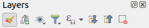
図 8.1 レイヤパネル内のレイヤツールバー
注釈
レイヤパネルを管理するツールは、印刷レイアウトのマップアイテムと凡例アイテムにも使用できます。
8.2.1.1. 地図テーマの設定
地図テーマを管理 ドロップダウンボタンを使用すると、 レイヤ パネルの可視性を操作するための便利なショートカットにアクセスできます。
 選択レイヤを表示
選択レイヤを表示選択レイヤを切り替え: は、パネル上で最初に選択されたレイヤの表示状態を変更し、その状態を他に選択されたレイヤにも適用します。 また、 スペースキー のショートカットからも利用できます。
選択レイヤを個別切り替え: は、選択された各レイヤについて表示状態を変更します
地図テーマを管理 メニューでは、レイヤの可視性の単純な制御だけでなく、凡例で 地図テーマ を構成し、ある地図テーマから別の地図テーマに切り替えたりすることができます。地図のテーマは、現在の地図凡例の スナップショット であり、以下のものを記録しています：
レイヤ パネル内で可視状態に設定されたレイヤ
さらに 、各可視レイヤに関する以下の情報：
地図テーマを作成するには、
表示したいレイヤをチェックします
レイヤのプロパティ（シンボロジ、ダイアグラム、ラベルなど...）をいつもどおりに設定します
下の方にある メニューを展開し、 追加... を押して、 プロジェクトに埋め込まれた新しいスタイル として保存します
注釈
地図のテーマはプロパティの現在の内容を保存しません。スタイル名への参照のみが保存されるため、このスタイルが有効なときにレイヤに変更を適用する（例えばシンボルレンダリングを変更する）と、テーマは新しい情報で更新されます。
他のレイヤについても必要なだけ上の手順を繰り返します
該当する場合は、 レイヤ パネルのグループや可視レイヤのノードを展開または折りたたみます。
パネル上部の
地図テーマの管理 ボタンをクリックし、 テーマの追加... をクリックします。地図テーマの名前を入力し、 OK ボタンをクリックします
新しい地図テーマが ドロップダウンメニューの下部にリストされます。
地図テーマは必要な数だけ作成できます。地図凡例の現在の組み合わせ（可視レイヤ、有効なスタイル、地図凡例ノード）が上記で定義された既存の地図テーマ内容と一致しない場合は、 テーマの追加... をクリックして新しい地図テーマを作成するか、 を使用して地図テーマを更新します。アクティブな地図テーマの名前を 現在のテーマの名前変更... で変更することもできますし、 現在のテーマを削除 ボタンで地図テーマを削除することもできます。
地図テーマは、あらかじめ設定されたさまざまな地図凡例の組み合わせをすばやく切り替えるのに便利です。リストで地図テーマを選択すると組み合わせが復元されます。設定されたすべてのテーマは印刷レイアウトにおいてもアクセスでき、特定のテーマに基づいて、現在のメインキャンバスのレンダリングとは関係なく、異なる地図アイテムを作成できます（ 地図アイテムレイヤ を参照）。
8.2.1.2. レイヤパネルのコンテキストメニューの概要
ツールバーの下部にあるレイヤパネルの主な構成要素は、プロジェクトに追加されたすべてのレイヤを一覧表示するフレームで、オプションでグループ別に整理することもできます。レイヤの隣にチェックボックスがある場合、 縮尺に応じた表示 が設定されていない限り、その内容はマップキャンバスの範囲に重なって表示されます。レイヤを選択し、凡例内で上下にドラッグすると、Z順序を変更することができます。Z順序とは、凡例の上部に近いレイヤほど、凡例の下方に並んでいるレイヤの上に描画されることを意味します。また、レイヤまたはレイヤのグループは、複数のQGISインスタンスにまたがってドラッグすることができます。
注釈
Z順序の動作は レイヤ順序 パネルで上書きすることができます。
パネルで選択されているアイテムに応じて、右クリックするとそれに応じた専用のオプションが表示されます。複数のアイテムが選択されている場合、一部の項目 （例： フィルタ 、 名前の変更 、 プロパティ ）は利用できなくなります。
オプション |
グループ |
ベクタレイヤ |
ラスタレイヤ |
メッシュレイヤ |
点群レイヤ |
3Dレイヤ |
|---|---|---|---|---|---|---|
|
|
|
|
|
|
|
|
|
|||||
|
|
|
|
|
||
地物の数を表示 |
|
|||||
|
|
|
||||
レイヤ/グループをコピー |
|
|
|
|
|
|
レイヤ/グループの名前を変更 |
|
|
|
|
|
|
|
|
|||||
現在の領域に引き伸ばす |
|
|||||
|
||||||
|
||||||
|
||||||
|
||||||
|
||||||
|
||||||
|
||||||
|
|
|
|
|
||
|
|
|
|
|
|
|
グループ外に移動 |
|
|
|
|
||
一番上に移動 |
|
|
|
|
|
|
一番下に移動 |
|
|
|
|
|
|
グループと全ての親をチェック |
|
|
|
|
||
選択レイヤをグループにする |
|
|
|
|
||
|
||||||
|
|
|
||||
|
|
|||||
フィルタ... |
|
|
|
|||
データソースを変更... |
|
|
|
|
||
データソースを修復... |
|
|
|
|
||
（編集モード時） |
|
|||||
|
||||||
|
||||||
レイヤの縮尺表示を設定... |
|
|
|
|
|
|
表示される縮尺にズーム |
|
|
|
|
||
|
|
|
|
|
||
|
|
|
|
|
||
|
|
|
||||
|
|
|
|
|
||
|
||||||
グループのWMSデータを設定... |
|
|||||
|
|
|||||
グループと全メンバをチェック（Ctrlキーを押しながらクリック） |
|
|||||
グループと全メンバのチェックを外す（Ctrlキーを押しながらクリック） |
|
|||||
保存... |
|
|||||
|
|
|
|
|
|
|
|
||||||
|
||||||
|
||||||
|
|
|
|
|
|
|
|
|
|
|
|
||
|
|
|
|
|
||
|
|
|
|
|
||
|
|
|
|
|
||
|
|
|
|
|
||
|
|
|
|
|
||
|
||||||
|
||||||
|
||||||
レイヤノートを追加... |
|
|
|
|
|
|
レイヤノートを編集... |
|
|
|
|
||
レイヤノートを削除 |
|
|
|
|
||
プロパティ... |
|
|
|
|
|


GRASSベクタレイヤについては、 編集モード切り替え は使用できません。GRASSベクタレイヤの編集については、 GRASSベクタレイヤをデジタイズして編集する のセクションを参照してください。
編集モード切り替え は使用できません。GRASSベクタレイヤの編集については、 GRASSベクタレイヤをデジタイズして編集する のセクションを参照してください。
8.2.1.3. グループやレイヤの操作
凡例ウィンドウのレイヤは、グループに整理することができます。これにはさまざまな方法があります:
アイコンを押して新しいグループを追加します。グループの名前を入力し Enter を押します。それから、既存のレイヤをクリックしてグループにドラッグします。
レイヤをいくつか選択し、凡例ウィンドウで右クリックして 選択レイヤをグループにする を選択します。選択したレイヤが自動的に新しいグループに配置されます。
レイヤをグループ外に移動するには、ドラッグするか、右クリックして グループ外に移動 を選択します。レイヤはグループ外に移動され、グループの上に配置されます。グループは他のグループ内に入れ子にもできます。レイヤが入れ子にされたグループに配置されている場合、 グループ外に移動 は、入れ子になった全てのグループの外にレイヤを移動します。
グループまたはレイヤをレイヤパネルの最上位に移動するには、それらを最上位にドラッグするか、 一番上に移動 を選択します。グループ内に入れ子になっているレイヤでこのオプションを使用すると、レイヤは現在のグループ中で最上位に移動します。 一番下に移動 オプションは同じ要領で、レイヤやグループを一番下に移動します。
グループのチェックボックスは、グループ内でチェックされたレイヤ全てを1クリックで表示・非表示にできます。 Ctrl キーを押しながらグループのチェックボックスをクリックすると、グループ内とそのサブグループ内の全てのレイヤも表示・非表示が切り替わります。
Ctrl を押しながらチェックされた/されていないレイヤをクリックすると、そのレイヤとすべての親レイヤのチェックを外し/付けます。
相互排他的グループ のオプションを有効にすると、グループ内で同時に表示されるレイヤが1つだけとなるようにすることができます。グループ内のあるレイヤが表示状態となると、他のすべてのレイヤは非表示になります。
Ctrl キーを押しながら追加のレイヤをクリックすると、複数のレイヤやグループを同時に選択することができます。選択したレイヤを同時に新しいグループに移動させることができます。
また、複数のアイテムを Ctrl キーを押しながら選択してから Ctrl+D を押すことで、選択されたすべてのレイヤやグループをレイヤのリストから一度に削除することもできます。
インジケータアイコンによるレイヤとグループの詳細情報
状況によっては、 レイヤ パネルのレイヤやグループの形式や、横に表示されるアイコンが変わり、そのレイヤ/グループについての詳しい情報が得られます。これらの要素は次のとおりです:
- レイヤが編集モードであり、データを変更できることを示します
レイヤに フィルタ が適用されていることを示します。アイコンにカーソルをのせるとフィルタ式が表示され、ダブルクリックするとクエリ式を変更できます
このレイヤがプロジェクトに 必須の レイヤであり、削除できないことを示します
埋め込まれたグループやレイヤ であることを示し、オリジナルのプロジェクトファイルへのパスを表示します
プロジェクトファイルを開いたときにデータソースが利用できなかったレイヤであることを示します（ 壊れたファイルパスの取り扱い を参照）。アイコンをクリックするか、レイヤのコンテキストメニューから データソースの変更... エントリを選択して、データソースのパスを更新してください。
 レイヤが 一時スクラッチレイヤ であり、このプロジェクトを閉じるとその内容は破棄されることを気付かせます。データの損失を避け、レイヤを恒久的なものにするには、アイコンをクリックしてQGISがサポートするGDALベクタ形式のいずれかにレイヤを保存します。
レイヤが 一時スクラッチレイヤ であり、このプロジェクトを閉じるとその内容は破棄されることを気付かせます。データの損失を避け、レイヤを恒久的なものにするには、アイコンをクリックしてQGISがサポートするGDALベクタ形式のいずれかにレイヤを保存します。レイヤが オフライン編集モード に使用されていることを表します
本質的に精度の低いCRSで保存された座標を持つレイヤであることを表します（ 対応する設定 を有効にする必要があります）
関連付けられた レイヤノート があるレイヤであることを表します
名前が灰色で表示されるのは、マップキャンバスの現在の縮尺が、そのレイヤを表示する縮尺の範囲（ プロパティで設定されている）の外にある場合です。コンテキストメニューの 表示される縮尺にズーム オプションを選択すると、そのレイヤの最も近い表示スケール範囲にマップをズームすることができます。
レイヤのレンダリングをグループで制御する
グループは、プロジェクトのツリー内でレイヤを構造化する手段ですが、マップのレンダリング時にフラット化された単独のオブジェクトとして扱われることで、その構成レイヤのレンダリング方法に影響することができます。
このようなレンダリングのオプションは、グループが選択されたときに レイヤスタイル パネル内で利用できます。 シンボロジ タブで、 グループとしてレイヤを描画 をチェックすると、個々のレイヤの代わりに、子レイヤ全体の外観を制御する一連のオプションが有効になります：
グループとしてレイヤを描画 をチェックすると、個々のレイヤの代わりに、子レイヤ全体の外観を制御する一連のオプションが有効になります：
不透明度: 他の子レイヤによって隠されている子レイヤの地物は、そのまま隠されており、不透明度は「グループ全体」にのみ適用されます。
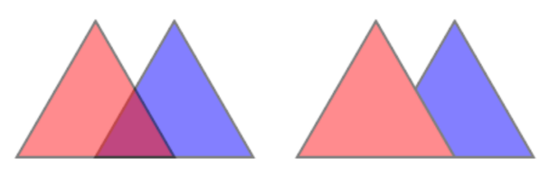
図 8.2 不透明度をレイヤに設定した場合とグループに設定した場合
左の画像は、2つのレイヤーを不透明度50％でレンダリングしたものです（下にある地物は見えますが、上にある50％の赤い地物によって半分マスキングされています）。2番目の画像は、グループの不透明度を設定した結果です（下にある青の子レイヤーの一部が、上にある赤のレイヤーによって完全に隠されており、その結果が不透明度50％でレンダリングされています）。
混合モード : 不透明度と同じように、グループ全体に 混合モード (乗算、オーバーレイ...)を設定すると、まず子レイヤの地物がフラット化され、上のレイヤが下のレイヤを覆い隠します。レンダリングは、フラットなグループとその下にあるレイヤをブレンドすることで得られます。
子レイヤに混合モードが割り当てられている場合、フラット化の前に適用されますが、その範囲はそのグループの他の子レイヤにのみ影響し、グループ全体の下にある他のレイヤには影響しないように制限されます。
さらに 混合モード のオプションがグループ内の子レイヤに用意されており、 シンボロジ タブでレンダリング中に他の子レイヤに対して「クリッピング」スタイルの操作を行うことができます。例えば、あるレイヤのレンダリング内容を、2つ目の「マスク」レイヤの内容でクリップすることができます。
描画エフェクト: effects を子レイヤのフラット化されたレンダリングにのみ適用します。例えば、グループに適用されたドロップシャドウのエフェクトは、隠蔽された子レイヤには見えません。
グループが グループとしてレイヤを描画 に設定されている場合、そのグループのみが レイヤ順序 パネルリストに表示されます。グループの子レイヤは、グループレイヤの配置によって順番が決まるので、この順番リストには表示されません。
8.2.1.4. レイヤスタイルを編集する
レイヤ パネルには、レイヤのレンダリングを素早く簡単に変更するショートカットがあります。
レイヤを右クリックし、リストから を選択します:
レイヤで現在利用可能な スタイル が表示されます。レイヤにいくつもスタイルを定義している場合は、そのスタイルを切り替えることができ、マップキャンバス上のレイヤのレンダリングは自動的に更新されます。
現在のスタイルの一部または全部をコピーします。また、適用可能な場合には、別のレイヤからコピーしたスタイルを貼り付けます
現在のスタイル名を変更...
新しいスタイルを 追加 （実際には現在のものをコピー）
または 現在のスタイルを削除 (複数のスタイルが利用可能な場合のみ)。
Tip
レイヤスタイルを素早く共有
コンテキストメニューから、レイヤのスタイルをコピーし、レイヤのグループまたは選択範囲に貼り付けます: スタイルは、元のレイヤと同じ型（ベクタ、ラスタ、メッシュ、点群…）のすべてのレイヤで、ベクタレイヤの場合は同じジオメトリ型（ポイント、ライン、ポリゴン）を持つすべてのレイヤに適用されます。
地物の分類に基づくシンボロジを使用する場合（例えば、ベクタレイヤでは カテゴリ値による定義、 連続値による定義、 ルールによる定義、点群では 分類（classification））、 レイヤ パネルのクラスエントリを右クリックすると、分類（及びその地物）の可視性を編集できるようになり、1つずつチェックする必要がなくなります:
ベクタレイヤでは、クラスリーフエントリのコンテクストメニューからも次にアクセスできます：
 地物を選択: そのクラスにマッチしたすべての地物をレイヤで選択します
地物を選択: そのクラスにマッチしたすべての地物をレイヤで選択しますシンボルの色 を カラーホイール を使って更新します。 最近使用した色は、カラーホイールの下部からも選べて便利です。
シンボルを編集...: 地物シンボル（シンボル、大きさ、色...）を変更する シンボルセレクタ ダイアログを開きます。
シンボルをコピーする
シンボルを貼り付ける
Tip
クラスリーフエントリをダブルクリックしても シンボルセレクタ ダイアログが開きます。
8.2.2. レイヤスタイル設定パネル
レイヤスタイル パネル（ Ctrl+3 も可）は、 レイヤプロパティ ダイアログの機能の一部へのショートカットです。レイヤのレンダリングと動作を定義し、レイヤプロパティダイアログを開かずにその効果を視覚化するための迅速かつ簡単な方法を提供します。
レイヤスタイルパネルはレイヤプロパティダイアログによるブロッキング（または「モーダル」：ダイアログ操作以外は受け付けない状態）を回避することに加えて、ダイアログで画面が乱雑になることも避けられ、ほとんどのスタイル機能（カラーセレクタ、効果のプロパティ、ルール編集、ラベル置換...）が含まれています。例えば、レイヤスタイルパネル内の色ボタンをクリックすると、色セレクタダイアログが個別のダイアログとしてではなく、レイヤスタイルパネル自体の内部で開かれます。
レイヤパネルの現在のレイヤのドロップダウンリストから項目を選択して、以下の設定ができます：
アクティブな項目に応じて、次を設定します:
グループの
シンボロジ （レイヤのレンダリングをグループで制御する を参照）ラスタレイヤの
シンボロジ 、 透過性 と 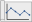
ヒストグラム プロパティ。これらのオプションは ラスタプロパティダイアログ と同じものです。ベクタレイヤの
シンボロジ 、  ラベル 、 マスク 、 3Dビュー プロパティ。これらのオプションは ベクタプロパティダイアログ と同一のもので、サードパーティ製のプラグインによって導入されたカスタムプロパティによって拡張することができます。
ラベル 、 マスク 、 3Dビュー プロパティ。これらのオプションは ベクタプロパティダイアログ と同一のもので、サードパーティ製のプラグインによって導入されたカスタムプロパティによって拡張することができます。メッシュレイヤの
シンボロジ 、 3Dビュー プロパティ。これらのオプションは メッシュデータセットのプロパティ と同じものです。点群レイヤの
シンボロジ 、 3Dビュー 及び 標高 プロパティ。これらのオプションは 点群のプロパティ と同じものです。ベクタタイルレイヤの
シンボロジ および ラベル プロパティ。 これらのオプションは ベクタタイルデータセットのプロパティ と同じものです。注記レイヤの
シンボロジ プロパティ。これらのオプションは feature annotation properties と同じものです。
グローバルマップシェーディング プロパティを有効にして設定する
関連付けられたスタイルを スタイルをマネージャ で管理する（詳細は カスタムスタイルを管理する を参照）。
現在のプロジェクトにおいてレイヤスタイル対して適用した変更の 履歴 を確認する：リストの中から任意の状態を選択して 適用 をクリックすることで、レイヤスタイルの状態を戻したり復元させたりすることができます。
このパネルのもう1つの強力な機能は、 ライブ更新 チェックボックスです。これにチェックを入れるとスタイル変更がマップキャンバスにすぐに表示され、 適用 ボタンをクリックする必要はなくなります。
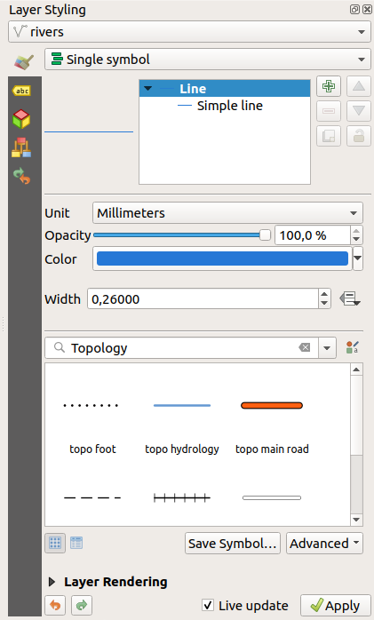
図 8.3 レイヤスタイルパネルからレイヤのシンボロジを定義する
8.2.3. レイヤ順序パネル
デフォルトでは、QGISのマップキャンバスに表示されるレイヤは レイヤ パネルの順序に従って描画されます。つまりパネル内でレイヤの位置が高いほど、マップビューではより前面に（従って、より見えやすく）表示されます。
レイヤ順序 パネルを メニュー内からもしくは Ctrl+9 を押して有効にすると、レイヤパネル内の順序とは無関係にレイヤの描画順序を定義することができます。レイヤのリストの下にある 描画順序の制御 にチェックを入れて、パネル内のレイヤを好きなように再編成してください。この順序がマップキャンバスに適用される順序になります。例えば 図 8.4 の場合、レイヤパネル内でのそれぞれのレイヤ配置とは無関係に、「airports」 地物が「alaska」 ポリゴンの上に表示されていることがわかります。
描画順序の制御 のチェックを外すと、デフォルトの動作に戻ります。
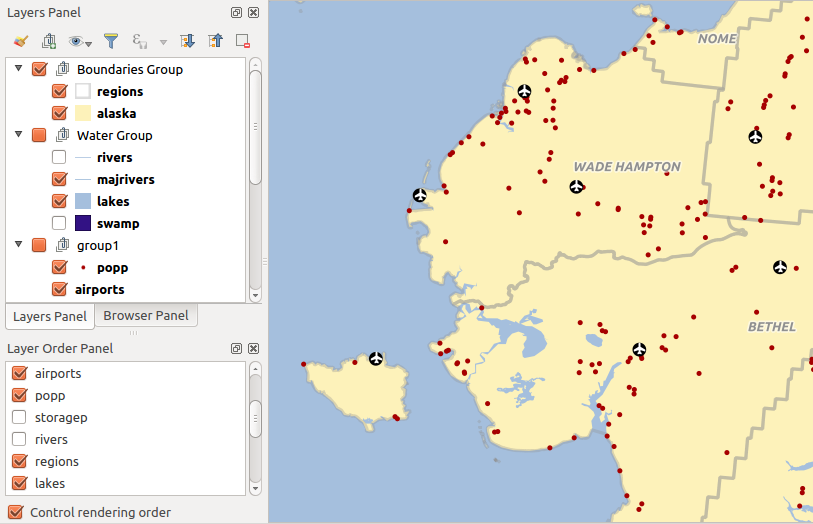
図 8.4 凡例とは無関係にレイヤの順序を定義する
8.2.4. 全体図パネル
全体図 パネル（ Ctrl+8 ）は、いくつかのレイヤの全範囲ビューの地図を表示します。全体図マップは、 メニューまたはレイヤのコンテキストメニューの 全体図に表示 オプションを使用するレイヤが表示されます。ビュー内では、現在のマップキャンバス範囲が赤い長方形で表示され、地図全体のどの領域が現在表示されているかをすばやく判断するのに役立ちます。全体図フレーム内の赤い長方形をクリックしてドラッグすると、それに応じてメインマップビューの範囲が更新されます。
全体図で使用するレイヤにラベル付けが設定されていても、全体図にラベルはレンダリングされないことに注意してください。
8.2.5. ログメッセージパネル
ロード時や、何らかの操作を処理するときは、 ログメッセージパネル を使用して別のタブに表示されるメッセージを追跡し従うことができます。これは、下のステータスバーの最右側のアイコンを使用して有効にできます。
8.2.6. 元に戻す/やり直すパネル
元に戻す/やり直す （ Ctrl+5 ）パネルには、編集されたレイヤごとに実行されたアクションの一覧が表示されます。リストの上に表示されたアクションを選択することで、一連のアクションを素早く元に戻すことができます。さらなる詳細については、 元に戻すとやり直す を参照してください。
8.2.7. 統計量の出力パネル
統計量の出力 パネル（ Ctrl+6 ）は、任意のベクタレイヤに関する情報の要約を提供します。このパネルでは、以下の事柄についての選択操作が可能です：
統計量を計算するベクタレイヤ: 一番上のドロップダウンメニューから選択するか、統計量ドロップダウンリストの一番下にある 選択した地物のみ チェックボックスを使用して レイヤ パネル内のアクティブレイヤと同期させることができます
使用するフィールドまたは
 式: 各レイヤについて、最後のエントリーが記憶され、レイヤの再選択時に自動的に計算されます。
式: 各レイヤについて、最後のエントリーが記憶され、レイヤの再選択時に自動的に計算されます。返される統計量はダイアログ右下にあるドロップダウンボタンを使って選択できます。フィールド（あるいは式の値）の型に応じて、利用可能な統計量は以下のとおりです：
統計 |
文字列 |
整数 |
浮動小数 |
日付 |
|---|---|---|---|---|
個数 |
|
|
|
|
個数（ユニークな値） |
|
|
||
個数（欠損値） |
|
|
|
|
Sum |
|
|
||
平均値（Mean） |
|
|
|
|
標準偏差（母集団） |
|
|
||
標準偏差（標本） |
|
|
||
最小値 |
|
|
|
|
最大 |
|
|
|
|
範囲（Range） |
|
|
|
|
最稀値（Minority） |
|
|
|
|
最頻値（Majority） |
|
|
|
|
種類（Variety） |
|
|
||
第１四分位（Q1） |
|
|
||
第３四分位（Q3） |
|
|
||
四分位範囲（IQR） |
|
|
||
最短長（Min Length） |
|
|||
最大長（Max Length） |
|
|||
平均長（Mean Length） |
|
統計量の概要は以下の設定・操作が可能です：
レイヤ全体に対する統計量を返す、または
選択した地物のみ にチェックを入れて選択した地物のみの統計量を返す ボタンを押して統計量をクリップボードにコピーし、別のアプリケーションにテーブルとして貼りつけられるようにする
ボタンを押して統計量をクリップボードにコピーし、別のアプリケーションにテーブルとして貼りつけられるようにする ボタンを押して、基礎となるデータソースに変更（例えば地物/フィールドの追加・削除や、属性値の変更）があった場合に統計量の再計算を行う
ボタンを押して、基礎となるデータソースに変更（例えば地物/フィールドの追加・削除や、属性値の変更）があった場合に統計量の再計算を行う
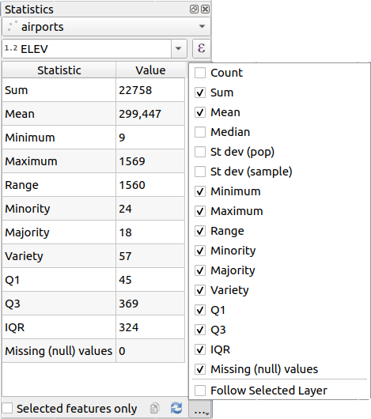
図 8.5 フィールドに対する統計量の一覧
8.2.8. デバッグ開発ツールパネル
デバッグ開発ツール パネル（F12）は、QGIS内での対処やデバッグのための統一された場所を提供します。利用可能なツールは次のタブに整理されています:
 APIドキュメント ： 開発者向けのドキュメントを組み込んでいます。
APIドキュメント ： 開発者向けのドキュメントを組み込んでいます。
注釈
プラグインの製作者は、独自のプラグインをデバッグしたり開発したりするために、このパネルをカスタムタブで拡張することができます。これは registerDevToolWidgetFactory メソッドを使って行います。
8.2.8.1. APIドキュメント
APIドキュメント タブには、  PyQGIS API ドキュメント または Qt API ドキュメント のいずれかを表示できます。これらはウィジェット内に組み込まれているため、QGISを離れることなくドキュメントの閲覧や検索を行うことができます。また、Pythonインタラクティブコンソールやテキストエディタのダイアログから、コードサンプル内のオブジェクトやクラスの特定のヘルプページを表示することも可能です。テキストを選択するかホバー（マウスカーソルを合わせる）して F1 を押すか、右クリックして コンテキストヘルプ を選択すると、そのAPIヘルプが表示されます。表示中のページをシステムのウェブブラウザで読みたい場合は、 ウェブブラウザで開く を押してください。
PyQGIS API ドキュメント または Qt API ドキュメント のいずれかを表示できます。これらはウィジェット内に組み込まれているため、QGISを離れることなくドキュメントの閲覧や検索を行うことができます。また、Pythonインタラクティブコンソールやテキストエディタのダイアログから、コードサンプル内のオブジェクトやクラスの特定のヘルプページを表示することも可能です。テキストを選択するかホバー（マウスカーソルを合わせる）して F1 を押すか、右クリックして コンテキストヘルプ を選択すると、そのAPIヘルプが表示されます。表示中のページをシステムのウェブブラウザで読みたい場合は、 ウェブブラウザで開く を押してください。
ウィジェットの設定に関する詳細については、 コンテキストヘルプ を参照してください。
8.2.8.2. ネットワークロガー
ネットワークロガー タブは、リクエストとリプライのステータス、ヘッダー、エラー、SSL設定エラー、タイムアウト、キャッシュステータスなど、便利な詳細情報と共に、ネットワークリクエストを記録して表示するのに役立ちます。
上部のツールバーから次ができます:
 ログをクリア: ログ履歴を消去します。
ログをクリア: ログ履歴を消去します。 ログを保存...: 最初に、ログが機微であり、注意して扱われるべきであるという大きな警告を表示し、その後ログを保存できるようにします。
ログを保存...: 最初に、ログが機微であり、注意して扱われるべきであるという大きな警告を表示し、その後ログを保存できるようにします。 設定 ドロップダウンメニューを押して、 完了リクエストを表示 するか、 タイムアウトを表示 するか、 キャッシュにある応答を表示 するかを選択します。
設定 ドロップダウンメニューを押して、 完了リクエストを表示 するか、 タイムアウトを表示 するか、 キャッシュにある応答を表示 するかを選択します。 キャッシュを無効化: キャッシュを無効にし、すべてのリクエストが実行されるようにします。
キャッシュを無効化: キャッシュを無効にし、すべてのリクエストが実行されるようにします。 リクエストをフィルタ は、URL文字列のサブセットまたはリクエストステータスに基づきます
リクエストをフィルタ は、URL文字列のサブセットまたはリクエストステータスに基づきます
リクエストを右クリックと、以下の操作ができます：
URLを開く デフォルトのブラウザでURLを開きます
URLをコピー
cURLとしてコピー ターミナルで使用できます
JSONとしてコピー: ツリーの値をjson文字列としてクリップボードにコピーし、バグレポートやリモートアシスタンスに簡単に貼り付けられるようにします。
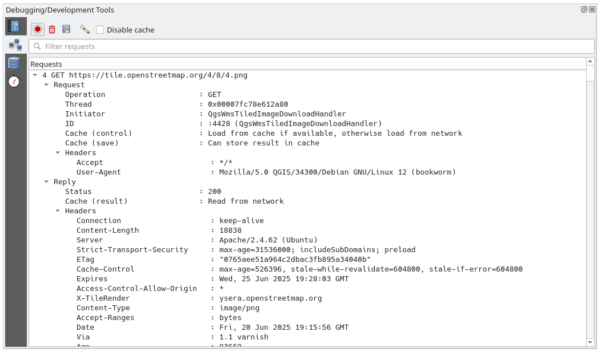
図 8.6 GETリクエストのネットワークロガー出力
8.2.8.3. クエリロガー
クエリロガー は、データプロバイダと接続APIからバックエンドデータベースに送信されたSQLコマンドと、QGISで計測された（つまりコマンドを送信したクライアントでの）実行時間を記録する場所です。これは、QGISアルゴリズムやプラグインのデバッグや開発中に特定のレイヤーのパフォーマンスを調査する際に役立ちます。
上部のツールバーから次ができます:
- ログをクリア: ログ履歴を消去します。
- ログを保存...: 最初に、ログが機微であり、注意して扱われるべきであるという大きな警告を表示し、その後ログを保存できるようにします。
- クエリをフィルタ プロバイダタイプ、開始時間、イニシエータ...などのクエリ文字列のサブセットや詳細に基づきます
報告されたクエリで右クリックすると、次ができます:
SQLをコピー は、QGISからデータベースに発行されたコマンドをコピーします
JSONとしてコピー: ツリーの値をjson文字列としてクリップボードにコピーし、バグレポートやリモートアシスタンスに簡単に貼り付けられるようにします。
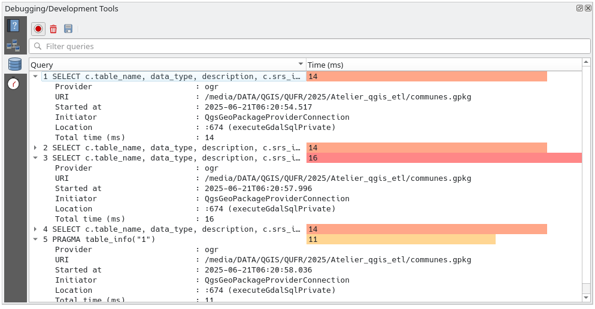
図 8.7 クエリロガーの出力
8.2.8.4. プロファイラー
プロファイル タブを使用すると、ユーザーによって要求されたアクションに関わるあらゆる操作の読み込み時間を取得することができます。コンテキストによって、これらの操作は設定の読み込み、メニュー、マップキャンバスや3Dビューの作成、マップレイヤの参照解決、ブックマークやレイアウトの読み込みなどがあります。これは、読み込み時間が遅い原因を特定するのに役立ちます。
カテゴリ値の出力 ドロップダウンメニュー: から、デフォルトでサポートされているアクションを選択できます。
Startup 時々発生する QGIS の起動時間が長くなるのを診断 (および修正) するのに役立ちます。
Project Load を使用すると、プロジェクトの読み込み時間が遅い原因を特定するために、プロジェクト読み込みのさまざまな段階の内訳を取得できます。
Map Render ツールを使用すると、マップ レンダリングの問題点を特定し、どのレイヤーがマップの再描画に時間がかかるかを正確に追跡できます。
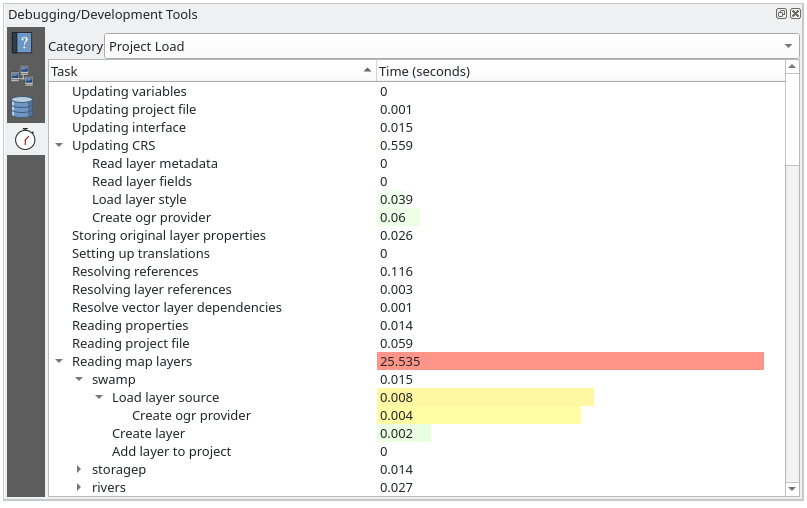
図 8.8 QGISの起動に関するプロファイラ
8.3. 外部プロジェクトからのレイヤの埋め込み
時には、さまざまなプロジェクトにある一部のレイヤについて、同じスタイルでレイヤを保持したい場合もあるでしょう。これらのレイヤに対して デフォルトスタイル を作成するか、別のプロジェクトからそのレイヤを埋め込むことで、時間と労力を節約することができます。
既存のプロジェクトからレイヤやグループを埋め込むことには、スタイル設定を超える利点がいくつかあります：
あらゆる種類のレイヤ（ベクタ/ラスタ、ローカル/オンラインなど...）を追加できます
グループとレイヤを取得することで、異なるプロジェクトで「背景」レイヤのツリー構造を同じに保つことができます
埋め込まれたレイヤは編集可能ですが、シンボロジ、ラベル、フォーム、デフォルト値やアクションなどのプロパティを変更することはできないため、プロジェクト間で一貫性を確保できます
元のプロジェクト内の項目を変更すると、変更は他のすべてのプロジェクトにも反映されます。
他のプロジェクトのコンテンツをあるプロジェクトに埋め込みたい場合には、 を選択して、以下のように操作します：
... ボタンをクリックし、プロジェクトを探します。プロジェクトの中身を確認することもできます（ 図 8.9 を参照）
Ctrl キー（
 の場合は Cmd キー）を押しながら取得したいレイヤやグループをクリックします
の場合は Cmd キー）を押しながら取得したいレイヤやグループをクリックしますOK をクリックします
選択したレイヤとグループは レイヤ パネルに埋め込まれ、マップキャンバスに表示されます。識別のために アイコンが名前の横に追加され、この上にマウスカーソルを置くと、元のプロジェクトファイルパスを示すツールチップが表示されます。
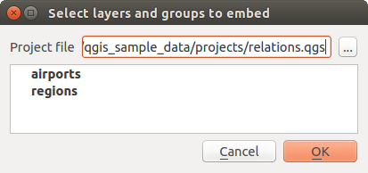
図 8.9 埋め込むレイヤとグループの選択
他のレイヤと同じように、埋め込まれたレイヤもレイヤを右クリックして レイヤの削除 をクリックすることで、プロジェクトから削除することができます。
Tip
埋め込みレイヤのレンダリングを変更する
元のプロジェクトファイルに変更を加えない限り、埋め込みレイヤのレンダリングは変更できません。しかし、レイヤ上で右クリックして 複製 を選択すると、完全な機能を備えた、元のプロジェクトに依存していないレイヤが作成されます。その後は、リンクされた埋め込みレイヤを削除しても問題ありません。
8.4. 地物とのやりとり
8.4.1. 地物の選択
QGISには、マップキャンバス上の地物を選択するためのツールがいくつかあります。選択ツールは、 メニューや 選択ツールバー にあります。
注釈
選択ツールは、現在アクティブなレイヤで動作します。
8.4.1.1. マップキャンバス上の手動選択
マウスを使って1つもしくは多数の地物を選択するには、以下のツールのいずれかを使います：
注釈
（任意レイヤの）既存のポリゴン地物を使用して、アクティブレイヤ内で重なる地物を選択するには ポリゴンによる地物選択 ツールを使用してください。ポリゴンを右クリックして、クリックした点を含むすべてのポリゴンのリストを表示するコンテキストメニューから、使用したいポリゴンを選択します。すると、ポリゴンと重なり合うアクティブレイヤのすべての地物が選択されます。
Tip
ツールを使うと、直前に行った選択をやり直せます。これは苦労して選択をした後、うっかりどこか別の場所をクリックしてしまい、選択がクリアされてしまった時に非常に便利です。
地物を選択する ツールを使用中に、Shift または Ctrl キー（macOS の場合は Cmd キー）を押すと、地物の選択が切り替わります（つまり、現在の選択に追加するか、選択から削除します）。
他のツールについては、以下のキーを押しながら選択した際の動作が異なります：
Shift ：地物を現在の選択に追加します
Ctrl/Cmd: 現在の選択群から地物を減らします。
Ctrl+Shift/Cmd+Shift: 現在の選択範囲と交差させます。つまり、現在の選択範囲から重なっている地物のみを保持します。
Alt: 選択群の形状内に完全に収まっている地物を選択します。 Shift または Ctrl/Cmd キーと組み合わせると、現在の選択群に地物を追加したり、現在の選択群から地物を削除したりできます。
8.4.1.2. 自動選択
その他の選択ツールは、地物の属性やその選択状態に基づいて選択を実行します。ツールのほとんどは 属性テーブル からも利用できます（属性テーブルと地図のキャンバスは同じ情報を表示するので、属性テーブル内で1つの地物を選択した場合、それはまた、地図キャンバスでも選択されることに注意してください）。
 式による地物選択... を選択するか、 Ctrl+F3 を押して、式ダイアログから地物を選択します。
式による地物選択... を選択するか、 Ctrl+F3 を押して、式ダイアログから地物を選択します。 アクティブレイヤの選択を解除 または Ctrl+Shift+A を押します
アクティブレイヤの選択を解除 または Ctrl+Shift+A を押します- すべての地物を選択 または Ctrl+A でも現在のレイヤの地物全てを選択します
 地物選択を反転 現在のレイヤ内の地物の選択状態を反転させます
地物選択を反転 現在のレイヤ内の地物の選択状態を反転させます 場所による選択 は、他の地物（同じレイヤもしくは他のレイヤ - 場所による選択 参照）との空間的な関係に基づいて地物を選択します
場所による選択 は、他の地物（同じレイヤもしくは他のレイヤ - 場所による選択 参照）との空間的な関係に基づいて地物を選択します指定距離内で選択 を使うと、参照されている地物から指定された最大距離内にある地物を選択できます。詳細は 一定距離以内の地物を選択 を参照してください。
例えば、QGISサンプルデータの regions.shp からBorough（市）の地域を探したい場合には、次のようにします：
- 式による地物選択 アイコンをクリックします
フィールドと値 グループを展開します
クエリしたいフィールド（ "TYPE_2" ）をダブルクリックします
右に現れたパネルの 全てのユニーク ボタンをクリックします
リストの中から、「Borough」（市）をダブルクリックします。 式 エディタフィールドで、以下のようにクエリを記述します：
"TYPE_2" = 'Borough'
地物の選択 ボタンをクリックします
式ビルダーダイアログから、 を使用して、以前に使用した式による選択を行うこともできます。ダイアログには最後に使用された20個の式が記憶されます。詳細情報や例は 式 を参照してください。
Tip
新しいファイルに選択地物を保存する
と を使用することで、ユーザは選択した地物を 一時スクラッチレイヤ や任意のファイル形式の 新規ベクタレイヤ に保存することができます。
8.4.1.3. 値による地物選択
この選択ツールはレイヤの地物フォームを開き、各フィールドで検索する値、大文字と小文字を区別するかどうか、使用する操作をユーザーが選択できるようにします。このツールには自動補完機能もあり、自動的に検索ボックスに既存の値を入力します。
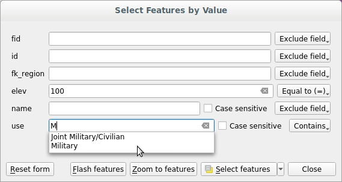
図 8.10 フォームダイアログを使用して地物をフィルタ/選択
各フィールドの横には、検索動作を制御するためのオプションを選べるドロップダウンリストがあります：
フィールド検索オプション |
文字列 |
Numeric |
日付 |
|---|---|---|---|
フィールドを除外 ：検索対象からフィールドを除外します |
|
|
|
等しい（=） |
|
|
|
等しくない（≠） |
|
|
|
より大きい（>） |
|
|
|
より小さい（<） |
|
|
|
以上（≥） |
|
|
|
以下（≤） |
|
|
|
範囲内（境界値を含む） |
|
|
|
範囲外（境界値を含む） |
|
|
|
含む |
|
||
含まない |
|
||
値がない（null） |
|
|
|
値がある（nullではない） |
|
|
|
で始まる |
|
||
で終わる |
|
文字列の比較には、 Case sensitive オプション（大文字・小文字を区別する）を使用することもできます。
全ての検索オプションを設定し終えたら、 地物を選択 ボタンをクリックしてマッチする地物を選択します。ドロップダウンオプションには以下のものがあります：
地物を選択
現在の選択に追加する
現在の選択から除去する
現在の選択をフィルタする
フォームのリセット ボタンを押すことで、全ての検索オプションをクリアすることができます。
検索条件をセットしたら、以下の操作も行えます：
地物にズーム あらかじめ選択することなく、マップキャンバス上の地物にズームします
地物をフラッシュ 検索条件に一致する地物を強調表示します。これは、選択や地物情報表示ツールを使用せずに地物を識別するのに便利な方法です。「地物をフラッシュ」はマップキャンバスの範囲を変更しないため、地物が現在の地図キャンバスの範囲内にある場合にのみ強調表示されることに注意してください。
8.4.2. 地物情報を表示する
地物情報を表示 ツールを使うと、マップキャンバスと対話しながら、地物やピクセルに関する情報をポップアップウィンドウに取得できます。QGISがサポートするほとんどのレイヤ型（ベクタ、ラスタ、メッシュ、点群、WMS、WFSなど）をクエリするのに使えます。要素を表示するには、次のいずれかの方法を使います;
次に、アクティブレイヤの地物またはピクセルをクリックします。選択されたものはマップキャンバスで強調表示され、 地物情報結果 ダイアログが開いて詳細を表示します。このダイアログには、高度な設定のための一連のボタンも表示されます。
8.4.2.1. 地物情報ダイアログ
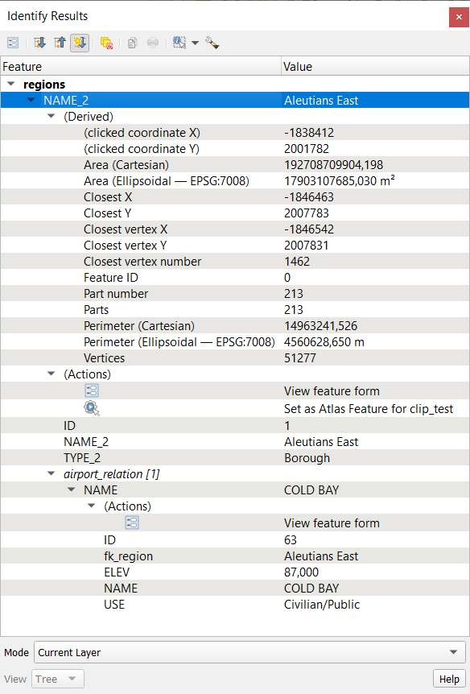
図 8.11 地物情報ダイアログ
下から上へ：
ビュー はダイアログの全体的な外観と結果のフォーマットを制御します;次のように設定できます:
ツリー ：これはデフォルトの表示形式であり、最初の項目がレイヤ名、その子要素が識別された要素となるツリー構造で結果を返します。
テーブル: ラスタ型のレイヤでのみ利用でき、結果を
レイヤ、FID、属性、および値の列を持ったテーブルとして表示しますグラフ: ラスタ型のレイヤのみで利用可能
モード は、結果を返すレイヤを選択するのに役立ちます。 これらのレイヤは表示に設定されてマップキャンバスにデータを表示しており、 にある 情報表示可能 が設定されている必要があります。 利用可能なモードは次の通りです:
現在のレイヤ: レイヤ パネルで選択されている（ひとつ以上の）レイヤのみが結果を返します。グループが選択されている場合、結果はその下位レイヤから取得されます。
トップダウン 最初の結果のみ: 結果は、マウスの下にある最も上の地物またはピクセルのレイヤから取得されます。
トップダウン: 結果は、マウスの下にある地物またはピクセルが存在する全てのレイヤから取得されます。
レイヤ選択: コンテキストメニューを開き、地物情報を表示するレイヤをユーザーが選択します。マウスの下にひとつの地物しかない場合、結果は自動的に表示されます。
上部の情報ウィジェット：マップキャンバス上のデータを識別すると、ここにある 地物情報結果 ダイアログに、クリック（または使用中のツールに応じてホバー）されたアイテムの詳細がリストアップされます。その書式設定は selected view の設定に従って表示されます。
識別ツールによって表示される情報は、選択しているレイヤの種類によって異なり、以下のようなものがあります。
ツリービューでは、上部の結果パネルの上に、いくつかの操作ツールが表示されます：
 地物フォームを見る 現在の地物の属性フォームを開きます
地物フォームを見る 現在の地物の属性フォームを開きます- 選択地物をクリップボードにコピー、スプレッドシートに貼り付けるのに適しています。
interactive identifying tools: 表示する地物やピクセルをマップキャンバス上で選択するためのツールを含んだドロップダウンメニュー
- 地物情報表示の設定 の下で、以下の設定を有効にすることができます:
- 単一地物の場合、自動でフォームを開く: チェックされている場合、単一の地物が選択されるたびに、その属性を表示するフォームが開きます。これは、地物の属性をすばやく編集するのに便利な方法です。
- 結果の派生属性を隠す をオンにすると、レイヤで実際に定義されているフィールドのみが表示されます
- 結果のNULL値を隠す
- リレーションを表示 をオンにすると、ベクタレイヤの 地物情報結果ツリー にリレーションが表示されます。
- ヘルプ で現在のドキュメントにアクセスします
8.4.2.2. 地物情報表示ツールを使用する
デフォルト表示 (ビュー: ツリー) では、地物情報結果 パネルには、レイヤに対してクエリを実行するためのいくつかのツールが提供されています。これらのツールと ターゲットレイヤーセレクタ を賢く組み合わせることによって選択操作が大幅に向上するかもしれません。
地物情報を表示 は、シングルクリックまたはクリック＆ドラッグで利用できます。
シングルクリックまたはクリック＆ドラッグで: 対象レイヤの重なっている地物が返されます
右クリック: 対象レイヤの重なっている地物が、レイヤにグループ化されてコンテキストメニューに表示され、以下を選択できます:
特定の地物の結果を表示する、
特定のレイヤの全地物の結果を表示する、
ベクタレイヤの場合、返された地物でフィルタした属性テーブルを開くことも可能です
または、返された全ての地物を表示します。
マウスオーバー時に地物情報を表示: マップキャンバス上を動かすと、対象レイヤにあるホバーされたアイテムがハイライト表示され、結果パネルに返されます。
ポリゴンで地物情報表示 は、描画または選択されたポリゴンと重なるアイテムを返します。
ポリゴンを描画（左クリックでポイントを追加、右クリックでポリゴンを閉じる）すると、対象レイヤの重なっている全ての地物がハイライト表示され、結果パネルに返されます。
右クリックすると、クリックした箇所の下にあるプロジェクト内のすべての可視ポリゴン地物のリストが表示されます。リストから選ぶと、QGIS は選択したポリゴンと重なっている対象レイヤの全ての地物を返します。
フリーハンドで地物を選択: フリーハンドで描画したポリゴンと重なるアイテムを返します。ポリゴンを描画（左クリックで開始し、ポインターを動かしてエリアを形成し、右クリックでポリゴンを閉じる）すると、対象レイヤの重なっている全ての地物がハイライト表示され、結果パネルに返されます。
半径で地物を選択 は、描画された円と重なっているアイテムを返します。円を描画します（左クリックで中心点を指定し、ポインタを動かして領域を成形するか、ポップアップテキストボックスに半径を入力し、左クリックまたは Enter を押して円を確定します）。対象レイヤの重なっているすべての地物がハイライト表示され、結果パネルに返されます。
8.4.2.3. 結果のコンテキストメニュー
その他の機能は、識別されたアイテムのコンテキストメニューにあります。例えば、レイヤの種類に応じて、以下の操作が行えます：
識別された個々のアイテムを操作する：
View feature form or Edit feature form, for vector layers
Zoom to feature: Zooms the map canvas to the extent of the identified feature or pixel
Identify feature: Restarts and recenters the search results on a referenced or referencing vector feature of the identified feature. Only available if
Show Relations is checked in Identify Settings.地物をコピー ：ベクタのジオメトリと属性、またはピクセルのジオメトリをコピーします。
選択地物を切り替え ：識別された地物を選択範囲に追加または選択範囲から削除します。
属性値のコピー ：クリックしたツリーアイテムの 値 列の値をコピーします。
地物属性のコピー ：識別されたアイテムの属性名と値をコピーします。
属性で地物を選択 ： 選択した属性値に一致するレイヤ内のすべてのベクタ地物を選択します。
レイヤ、結果パネル、またはマップキャンバスのレンダリングを制御する：
結果のクリア ：ウィンドウ内の結果を削除します。
ハイライトをクリア ： マップ上でハイライト表示されているアイテムを削除します。
Highlight all: Highlights in the map canvas all the items identified in the results dialog, regardless of their layer
Highlight layer: Highlights in the map canvas all the items identified in the layer of the selected entry
Activate layer: Selects the layer of the identified item in the Layers panel
Layer properties: Opens the layer properties window of the identified item
Expand all or Collapse all the results tree
8.5. レイヤのプロパティの保存および共有
8.5.1. カスタムスタイルを管理する
ベクタレイヤがマップキャンバスに追加されると、QGISはデフォルトでランダムなシンボル/色を使用して地物をレンダリングします。ただし、 でデフォルトのシンボルを設定することができ、新しく追加された各レイヤには、ジオメトリタイプに応じてこれが適用されます。
しかし、ほとんどの場合、レイヤに自動的にまたは手動で（より少ない労力で）適用できる、カスタマイズされたより複雑なスタイルが欲しいと思うでしょう。これはレイヤのプロパティダイアログの下部にある メニューを使えば実現できます。 このメニューには、スタイルを作成、読み込み、管理するための機能があります。
スタイルは、レイヤーやプロジェクトのプロパティダイアログで設定された、レイヤーのレンダリングや操作に関する様々な情報を保存します。これには以下が含まれます。
カテゴリ |
Vector |
Raster |
|---|---|---|
|
||
該当なし |
||
|
該当なし |
|
フィールドプロパティ および 制約 |
該当なし |
|
|
該当なし |
|
該当なし |
||
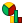 |
該当なし |
|
|
||
|
||
該当なし |
||
該当なし |
||
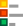 |
該当なし |
|

{kind=link}
{kind=link}
{kind=link}
{kind=link}
{kind=link}
{kind=link}
{kind=link}
{kind=link}
{kind=link}
{kind=link}
{kind=link}
{kind=link}
{kind=link}
{kind=link}
{kind=link}
{kind=link}
{kind=link}
{kind=link}
{kind=link}
{kind=link}
{kind=link}
{kind=link}
{kind=link}
{kind=link}
{kind=link}
{kind=link}
{kind=link}
{kind=link}
{kind=link}
{kind=link}
{kind=link}
{kind=link}
{kind=link}
{kind=link}
{kind=link}
{kind=link}
{kind=link}
{kind=link}
{kind=link}
{kind=link}
{kind=link}
{kind=link}
{kind=link}
{kind=link}
{kind=link}
{kind=link}
{kind=link}
{kind=link}
{kind=link}
{kind=link}
{kind=link}
{kind=link}
{kind=link}
{kind=link}
{kind=link}
{kind=link}
{kind=link}
{kind=link}
{kind=link}
{kind=link}
{kind=link}
{kind=link}
{kind=link}
{kind=link}
{kind=link}
{kind=link}
{kind=link}
デフォルトでは、読み込まれたレイヤに適用されるスタイルは default という名前です。あなたのレイヤに理想的で適切なレンダリングが設定できたら、  コンボボックスをクリックして下記の項目を選択することで、スタイルを保存することができます。
コンボボックスをクリックして下記の項目を選択することで、スタイルを保存することができます。
現在のスタイル名を変更 ：現在アクティブなスタイルは名前が変更され、現在のオプションで上書きされます
追加 ：現在のオプションを使用して新しいスタイルが作成されます。デフォルトでは、QGISプロジェクトファイルに保存されます。別のファイルやデータベースにスタイルを保存するには、以下を参照してください。
現在のスタイルを削除 ：レイヤに複数のスタイルが定義されている場合は、不要なスタイルを削除します。
スタイルのドロップダウンリストの最下部で、レイヤに設定されているスタイルのうちアクティブなものにチェックが入っていることを確認できます。
レイヤのプロパティダイアログでスタイルの適用を確定させるたびに、アクティブなスタイルは変更された内容で更新されることに注意してください。
あるレイヤに対するスタイルは、望むならば好きなだけ作成することができますが、一度にアクティブにできるのは1つだけです。 地図のテーマ と組み合わせることで、 マップ凡例のレイヤを複製することなく、複雑なプロジェクトを迅速かつ強力に管理することができます。
注釈
レイヤのプロパティに変更を適用すると、変更内容がアクティブなスタイルに保存されるため、 地図テーマ で使用しているスタイルを誤って変更しないよう、正しいスタイルを編集していることを常に確認するようにしましょう。
Tip
レイヤのコンテキストメニューからスタイル管理
レイヤーのスタイルをコピー、貼り付け、追加、または名前変更するには、 レイヤー パネルでレイヤーを右クリックします。ベクタレイヤーとラスタレイヤーのどちらでも、コピー/貼り付けするスタイルカテゴリを選択できます。レイヤーの種類に応じて、 全スタイルカテゴリ または利用可能なカテゴリのいずれかを選択してください。ラスタレイヤーの場合、 シンボロジー と レンダリング カテゴリは常に一緒にコピーされることに注意してください。
8.5.2. スタイルをファイルやデータベースに保存する
スタイル コンボボックスから作成されたスタイルは、デフォルトではプロジェクト内に保存され、プロジェクト内のレイヤ間でスタイルをコピー・貼りつけできますが、スタイルをプロジェクト外に保存し、別のプロジェクトで読み込めるようにすることもできます。
8.5.2.1. テキストファイルに保存
をクリックすることで、スタイルは以下の形式で保存できます：
QGIS QMLスタイルファイル（
.qml）SLD スタイルファイル（
.sld）、ベクタレイヤのみ可能
{kind=link}
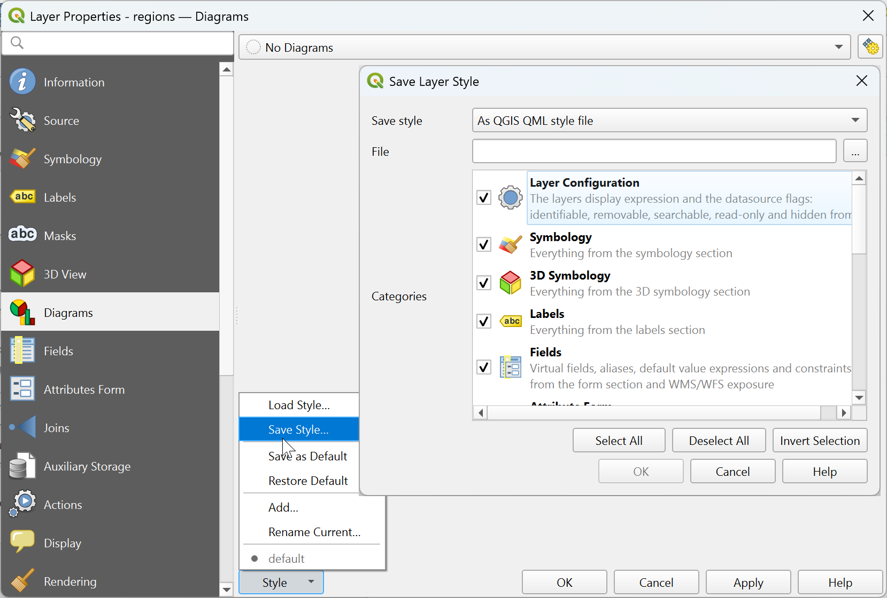
図 8.12 ベクタレイヤのスタイルコンボボックスのオプション
ファイルベース形式のレイヤ（ .shp 、 .tab... ）を使っている場合、 デフォルトとして保存 はそのレイヤのための（ファイルと同名の） .qml ファイルを生成します。SLDファイルは任意のタイプのレンダラ（単一定義のシンボル、カテゴリ値による定義、連続値による定義、あるいは、ルールによる定義）からエクスポートすることができますが、SLDファイルをインポートする際は、単一定義もしくはルールによる定義のレンダラが生成されます。これは、カテゴリ値もしくは連続値による定義のスタイルは、ルールによる定義のスタイルへと変換されることを意味します。これらのレンダラを維持したい場合には、QML形式を使用する必要があります。一方で、このように簡単にスタイルをルールによる定義へと変換できる方法があると、非常に便利なこともあります。
8.5.2.2. データベースに保存
レイヤのデータソースがデータベースプロバイダの場合、ベクタレイヤスタイルをデータベースに保存することもできます。サポートされているフォーマットは PostgreSQL、 GeoPackage、SpatiaLite、MS SQL Server、Oracleです。レイヤスタイルはデータベース内の（ layer_styles という名前の）テーブルに保存されます。 をクリックし、ダイアログでスタイル名の決定、説明の追加、.ui ファイルの追加、デフォルトスタイルにするかどうかのチェックを行います。
データベースの単一テーブルに複数のスタイルを保存することもできます。しかしながら、各テーブルでデフォルトのスタイルは1つだけしか持つことができません。デフォルトのスタイルは、レイヤのデータベースまたはアクティブな ユーザープロファイル ディレクトリにあるローカルなSQLiteデータベースである qgis.db 内に保存することができます。
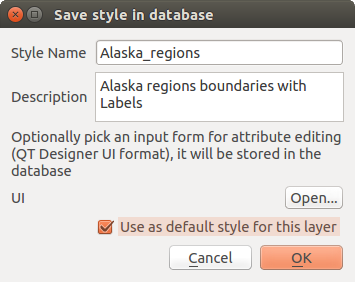
図 8.13 データベースにスタイルを保存ダイアログ
Tip
データベース間でスタイルファイルを共有する
スタイルをデータベースに保存できるのは、レイヤがそのようなデータベースに由来する場合のみです。（例えば、Oracle のレイヤと MS SQL Server のスタイルのように）データベースを混合させることはできません。データベース間でスタイルを共有したい場合は、代わりにプレーンテキストファイルを使用してください。
注釈
PostgreSQLデータベースのバックアップから layer_styles テーブルを復元する際に問題が起こることがあります。この問題を修正するには、 QGIS layer_style テーブルとデータベースのバックアップ に従ってください。
8.5.2.3. スタイルの読み込み
QGISにレイヤを読み込むとき、レイヤにデフォルトのスタイルが存在する場合には、QGISはそのスタイルでレイヤを読み込みます。また、 はそのファイルを探して読み込み、レイヤの現在のスタイルでそのファイルを置き換えます。
で、任意の保存されたスタイルをレイヤに適用させることができます。テキスト形式のスタイル（ .sld や .qml ）はフォーマットが何であれどのようなレイヤにも適用できますが、データベース内に保存されたスタイルを読み込むのは、レイヤが同じデータベースのものであるか、またはスタイルがQGISのローカルデータベースに保存されている場合にのみ可能です。
DBマネージャ ダイアログは、データベース内で見つかったレイヤに関連するスタイルや、データベース内に保存されているその他スタイルのリストを名前と説明付きで表示します。
Tip
プロジェクト内でのレイヤスタイルの素早い共有
ファイルやデータベーススタイルをインポートせずに、プロジェクト内でレイヤのスタイルを共有することもできます： レイヤパネル でレイヤを右クリックし、 スタイル コンボボックスからレイヤのスタイルをコピーして、レイヤのグループや選択したレイヤに貼りつけます。このスタイルは、元のレイヤと同じタイプ（ベクタ、ラスタ）で、ベクタレイヤの場合は同じジオメトリタイプ（ポイント、ライン、ポリゴン）を持つ全てのレイヤに適用されます。
8.5.3. レイヤ定義ファイル
レイヤ定義は、アクティブなレイヤのコンテキストメニューで を使用することで、 レイヤ定義ファイル （ .qlr ）として保存することができます。レイヤ定義ファイル（ .qlr ）には、 レイヤのデータソースとスタイルへの参照が含まれています。 .qlr ファイルはブラウザパネルに表示され、レイヤパネルにレイヤ（と保存されたスタイル）を追加するために使用できます。システムのファイルマネージャからマップキャンバスに .qlr ファイルをドラッグアンドドロップすることもできます。
8.6. データのドキュメント作成
レイヤでデータを表示したり、シンボルを作成するだけでなく、QGISではレイヤに以下の情報を入力することができます：
メタデータ ：データセットの入手方法や内容の理解に役立つ情報、アクセス方法、使用方法などに関する情報です。これらの情報はデータソースのプロパティであり、QGISプロジェクト外に存在させることができます。
レイヤノート ：現在のプロジェクトにおけるレイヤに関する説明やコメント
8.6.1. メタデータ
プロジェクトまたはレイヤのプロパティダイアログにある  メタデータ タブでは、その要素に関するメタデータ報告を作成および編集できます。記入する情報は以下の通りです：
メタデータ タブでは、その要素に関するメタデータ報告を作成および編集できます。記入する情報は以下の通りです：
データの 識別 ：データセットの基本属性（親識別子、識別子、タイトル、要約、言語など）
データが属する カテゴリ ： ISO カテゴリと併せて、カスタムのカテゴリを追加することもできます
キーワード ：データおよび関連する概念を標準的な基本語彙に従って検索するためのキーワード
データセットへの アクセス （ライセンス、権利、料金および制約）
データセットの 領域 ：空間的（CRS、地図領域、高度）な範囲と、時間的な範囲の両方
データセットの所有者の 連絡先
付随的なリソースや関連する情報への リンク
データセットについての 履歴
入力された情報の概要は 検証 タブに表示され、フォームに関連した潜在的な問題を特定するのに役立ちます。問題を修正してもよいですが、無視することもできます。
メタデータはデフォルトでプロジェクトファイルに保存されます。 メタデータ ドロップダウンには .qmd ファイルからメタデータを読み込む/保存するオプションと、「デフォルト」の場所からメタデータを読み込む/保存するオプションがあります。
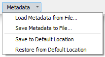
図 8.14 メタデータ読み込み／保存オプション
デフォルトの場所に保存 および デフォルトの場所から復元 で使用される「デフォルト」の場所は、基になるデータソースとその設定によって変わります:
PostgreSQL データソースの場合、設定オプション QGISレイヤメタデータをデータベースに保存/読み込みを許可する がチェックされていると、メタデータはデータベース内の専用テーブル内に保存されます。
GeoPackage データソースの場合、 デフォルトの場所に保存 は常に GeoPackage の内部メタデータテーブルにメタデータを保存します。
パネルメタデータがPostgreSQLやGeoPackageの内部テーブルに保存されると、ブラウザや layer metadata search panel で検索やフィルタリングが可能になります。
GeoPackage以外のファイルベースのデータソースの場合、デフォルトの場所に保存 を実行すると、対象ファイルと同じ場所にメタデータが
.qmdファイルとして保存されます。上記以外の場合、デフォルトの場所に保存 を実行すると、メタデータはローカルの
.sqliteデータベースに保存されます。
8.6.2. レイヤノート
レイヤノートは、現在のプロジェクト内でレイヤのドキュメントを作成できます。これは、to doリストや説明、警告など、プロジェクトのユーザーにとって重要なメッセージを保存する場所として使用できます。
レイヤ パネルのレイヤのコンテキストメニューから レイヤノートを追加... を選択し、開いたダイアログに必要なテキストを入力します。
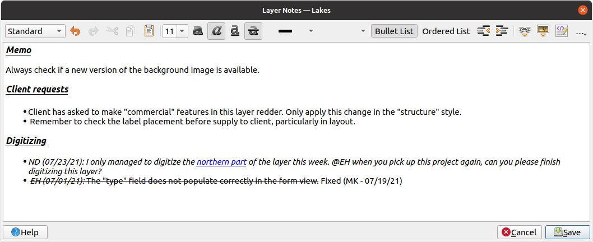
図 8.15 レイヤノートを追加
レイヤノート ダイアログはHTMLベースのマルチラインテキストボックスで、以下のツール一式を備えています：
テキスト操作：切り取り、コピー、貼り付け、元に戻す、やり直す
コンテンツの全部または一部に適用できる文字の書式設定：フォントのサイズと色、太字、イタリック、下線、取り消し線、背景色、URLのハイライト
パラグラフの構造化：箇条書き、順序リスト、字下げ、定義済みの見出し
ファイルの挿入（ドラッグ＆ドロップでも可）
HTMLコードの編集
ツールバー右端にある ... のドロップダウンメニューでは、以下の操作ができます：
すべてのフォーマットを削除
文字フォーマットを削除
内容を消去
レイヤ パネルにおいて、レイヤノートを持つレイヤには アイコンが付き、このアイコンのマウスを乗せるとノートが表示されます。このアイコンをクリックすると、レイヤノートを編集できます。また、レイヤを右クリックして レイヤノートを編集... したり、 レイヤノートを削除 することもできます。
注釈
レイヤノートは レイヤスタイル の一部であり、 .qml ファイルや .qlr ファイルに保存できます。レイヤスタイルのコピー＆ペーストによって、あるレイヤのノートを別のレイヤに移転させることもできます。
8.7. 値を変数に格納する
QGISでは、繰り返し使用する便利な値（例えばプロジェクトのタイトル、ユーザーの氏名など）を変数に保存し、式で使用できます。変数は、アプリケーションのグローバルレベル、プロジェクトレベル、レイヤレベル、プロセシングモデルレベル、レイアウトレベル、レイアウトアイテムのレベルで定義できます。CSSのカスケードルールと同様に、変数は上書きされます。例えば、プロジェクトレベルの変数は、同じ名前で設定されたアプリケーショングローバルレベルの変数を上書きします。変数名の前に @ 文字を付けることで、変数を使用してテキスト文字列やその他のカスタム式を作成できます。例えば、印刷レイアウトのラベル作成で以下の内容とすると：
This map was made using QGIS [% @qgis_version %]. The project file for this
map is: [% @project_path %]
次のようなラベルをレンダリングします:
This map was made using QGIS 3.4.4-Madeira. The project file for this map is:
/gis/qgis-user-conference-2019.qgs
プリセットの読み取り専用変数 の他に、上記のどのレベルに対しても独自のカスタム変数を定義することができます。以下の場所で変数を管理できます：
グローバル変数 メニューから
プロジェクト変数 プロジェクトのプロパティ ダイアログ（ プロジェクトのプロパティ 参照）から
ベクタレイヤ変数 レイヤプロパティ ダイアログ（ ベクタプロパティダイアログ 参照）から
モデル変数 モデルデザイナー ダイアログから ( モデルデザイナー を参照)；
レイアウト変数 印刷レイアウトの レイアウト パネル（ レイアウトパネル 参照）から
レイアウトアイテム変数 印刷レイアウトの アイテムプロパティ パネル（ レイアウトアイテムの共通オプション 参照）から
編集可能な変数と区別するために、読み取り専用変数の名前と値はイタリック体で表示されます。一方、低いレベルのもので上書きされた高レベル変数には取り消し線が引かれます。
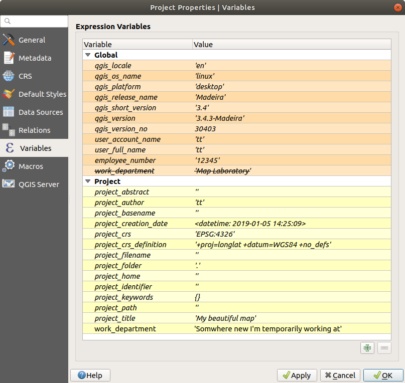
図 8.16 プロジェクトレベルの変数エディタ
注釈
変数についての詳細や例を知りたい場合には、 Nyall Dawson 氏のブログ投稿 Exploring variables in QGIS 2.12, part 1 、 part 2 、 part 3 を参照してください。
8.8. 共通のウィジェット
QGISでは、作業頻度が多いオプションがいくつかあります。作業に便利なように、QGIS では以下に紹介する特別なウィジェットが用意されています。
8.8.1. カラーセレクタ
8.8.1.1. 色ダイアログ
色を選ぶために  をクリックすると、 色の選択 ダイアログが現れます。このダイアログの機能は の ネイティブの色選択ダイアログを使用する パラメータのチェックボックスの状態に依存します。チェックが入っている場合は、色選択にはQGISが起動しているOSのネイティブの色選択ダイアログが使用されます。チェックが入っていない場合には、QGISのカスタムカラーセレクタが使われます。
をクリックすると、 色の選択 ダイアログが現れます。このダイアログの機能は の ネイティブの色選択ダイアログを使用する パラメータのチェックボックスの状態に依存します。チェックが入っている場合は、色選択にはQGISが起動しているOSのネイティブの色選択ダイアログが使用されます。チェックが入っていない場合には、QGISのカスタムカラーセレクタが使われます。
このカスタムカラーセレクタダイアログは4つの異なるタブを持っており、 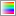 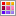
{kind=link}
{kind=link}
{kind=link}
{kind=link}
{kind=link}
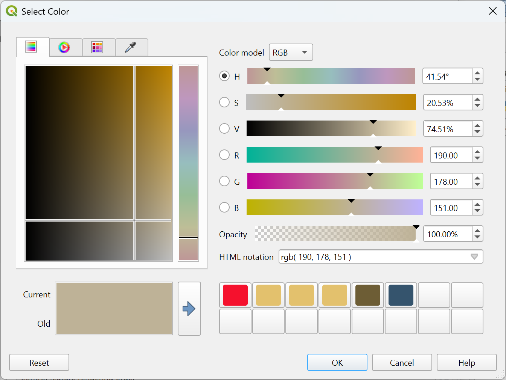
図 8.17 カラーランプタブ
色見本 タブでは、カラーパレットのリストから色を選択することができます（詳細は 色の設定 参照）。 最近使った色 パレット以外は、フレームの下部にある  カレント色を追加 と
カレント色を追加 と  選択した色の削除 ボタンで編集することができます。
選択した色の削除 ボタンで編集することができます。
パレットのコンボボックスの隣にある ... ボタンは以下のオプションを提供します。
色のコピー、貼り付け、インポートまたはエクスポート
カラーパレットの新規作成、インポートまたは削除
色ボタンに表示 の項目で、カスタムパレットをカラーセレクタウィジェットに追加する（ 図 8.19 参照）
{kind=link}
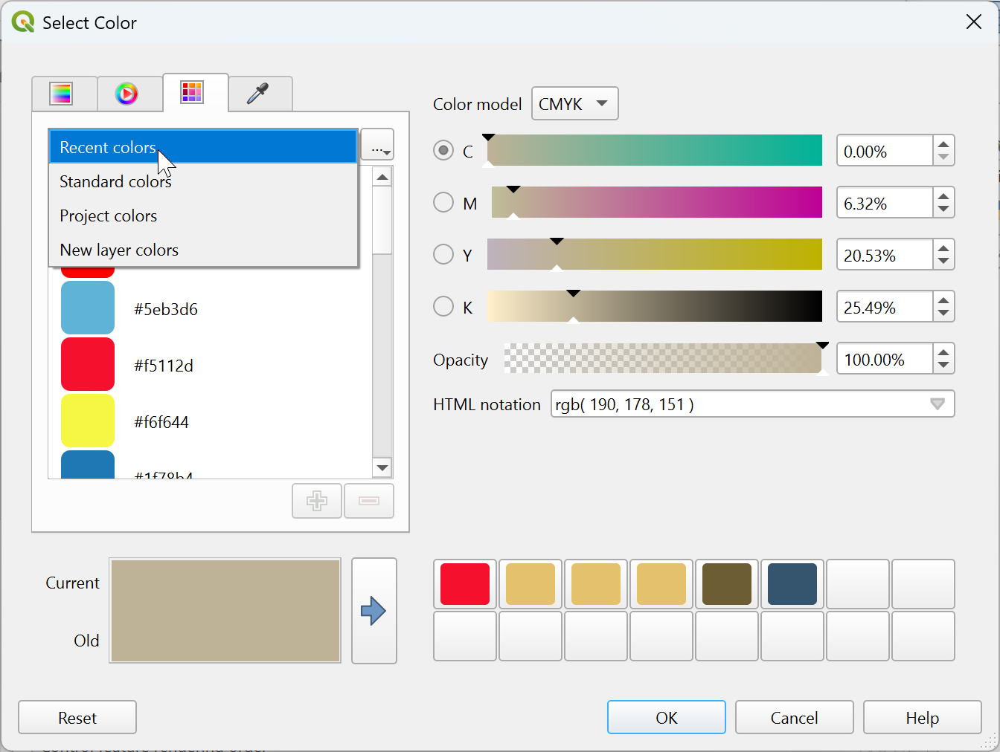
図 8.18 色見本タブ
別の選択肢として、 カラーピッカー を使用してQGISのUIや他のアプリケーションの任意の部分に置いたマウスカーソルの下にある色をサンプルすることができます。タブがアクティブなときにスペースバーを押し、目的の色の上にマウスを移動させて、クリックするかスペースバーを再度押します。 色をサンプルする ボタンをクリックしても、カラーピッカーを起動することができます。
お使いの方法にかかわらず、選択した色は常に カラーモデル のオプションで表示されます。これはデフォルトで プロジェクトのカラーモデル に準拠します。
RGB : 色は HSV（色相、彩度、明度）または RGB（赤、緑、青）の値のスライダーを使って設定します。
CMYK (シアン、マゼンタ、イエロー、ブラック)
色の変更は、カラーホイールやカラーランプ、任意の色パラメータのスライダーをクリックすることで簡単に行えます。色パラメータは横のスピンボックスを使うか、対応するスライダー上でマウスホイールをスクロールすることで調整することができます。また、HTML表記法で色を入力することもできます。最後に、透明度を設定するための 不透明度 スライダーがあります。
このダイアログには（オブジェクトに適用されている） 前の色 と（選択した） 現在の色 を視覚的に比較する機能もあります。ドラッグドロップするか、 見本に色を追加 ボタンを押すと、これらの色をスロットに保存し、簡単にアクセスできます。
{kind=link}
Tip
色のクイック変更
あるカラーセレクタウィジェットを別のカラーセレクタウィジェットへドラッグ＆ドロップすると、その色を適用することができます。
8.8.1.2. 色選択のドロップダウンショートカット
色ボタンの右にあるドロップダウンの矢印をクリックすると、色を素早く選択するためのウィジェットが表示されます。このショートカットには、以下の機能があります：
色を選ぶためのカラーホイール
色の不透明度を変更するためのアルファ値スライダー
色ボタンに表示 で設定されたカラーパレット
現在の色のコピーと、別のウィジェットへの貼り付け
コンピュータ画面上の任意の場所から色を取得
カラーセレクタダイアログから色を選択する
色をあるウィジェットから別のウィジェットにドラッグ＆ドロップして、素早く色を変更する
Tip
色選択ウィジェット上でマウスホイールをスクロールすると、関連する色の不透明度をすばやく変更できます。
注釈
カラーウィジェットがデータによって定義された上書きプロパティによって プロジェクトの色 に設定されている場合、上記の色を変更するための機能は利用できません。まず初めに 色のリンクの解除 をするか、定義を クリア する必要があります。
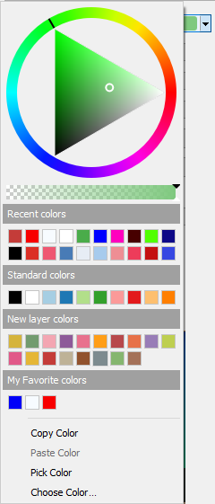
図 8.19 クイックカラーセレクタメニュー
8.8.1.3. カラーランプのドロップダウンショートカット
カラーランプは、1つまたは複数の地物に色の組み合わせを適用するための実用的な方法です。その作成方法については、 カラーランプの設定 のセクションで説明しています。色については、
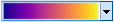
カラーランプボタンを押すと、対応したカラーランプタイプのダイアログが開き、そのプロパティを変更することができます。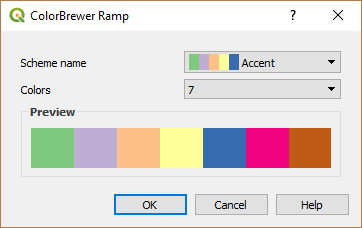
図 8.20 ColorBrewerランプをカスタマイズする
ボタンの右側にあるドロップダウンメニューを使用すると、カラーランプとオプションの幅広いセットに素早くアクセスできます：
カラーランプを反転
現在のランプをクリア ウィジェットに割り当てられているカラーランプを解除します（特定の箇所で利用可能）
- ランダムカラーランプ ：一部の状況でのみ利用可能で（例えばカラーランプをレイヤのシンボロジに使用する場合）、このエントリにチェックを入れるとランダムな色でカラーランプを作成し適用します。また、 色をシャッフル エントリを使用でき、現在のカラーランプに満足できない場合には新しいランダムカラーランプを再生成できます。
スタイルマネージャ ダイアログにおいて お気に入り に設定されている
グラデーションあるいはカタログ: cpt-cityのカラーランプのプレビュー全カラーランプ で、対応するカラーランプデータベースへアクセスする
カラーランプを新規作成... で、現在のウィジェットで使用可能な、任意のサポートされている形式のカラーランプを作成する（このカラーランプは、ライブラリに保存しない限りは他の場所で使用できないことに注意してください）
カラーランプを編集... は、カラーランプボタンをクリックした時と同じです。
カラーランプを保存... は、現在のカラーランプをカスタマイズが適用された状態でスタイルライブラリに保存します
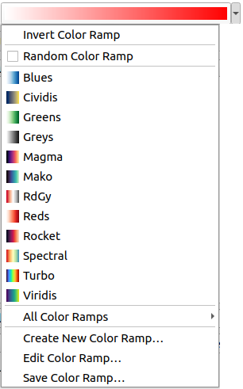
図 8.21 クイックカラーランプ選択ウィジェット
8.8.2. シンボルウィジェット
シンボル セレクタウィジェットは、地物のシンボルプロパティを設定したい場合に便利なショートカットです。ドロップダウン矢印をクリックすると、以下のシンボルオプションが 色ドロップダウンウィジェット の機能とともに表示されます。
シンボルの設定... ： これはシンボルセレクタウィジェットを起動するのと同じです。 シンボルのパラメータ を設定するためのダイアログを開きます。
シンボルをコピーする は、現在のアイテムのシンボルをコピーします
シンボルを貼り付ける は、現在のアイテムにシンボルを貼り付けます。素早くシンボル設定ができます
現在のシンボルをクリア ウィジェットに割り当てられているシンボルを解除します（特定の箇所で利用可能）
Tip
マーカー又はラインシンボルウィジェット上でマウスホイールをスクロールすると、関連するシンボルの大きさをすばやく変更できます。
8.8.3. リモート / 埋め込みファイルセレクタ
ファイルセレクタウィジェットの横に、 ... ボタンと一緒にドロップダウンの矢印ボタンが表示されていることがあります。これは、以下の箇所で利用できます:
シンボルやラベルにSVGファイルを使用する場合
シンボルやラベル、テクスチャ、地図整飾のカスタマイズにラスタ画像を使用する場合
矢印をクリックすると、以下の操作ができるメニューが表示されます:
ファイルを選択… は、ファイルシステムからファイルを読み込むためのものです。ファイルはファイルパスによって識別され、QGIS は対応する画像を表示するためにそのパスを解決する必要があります。
URLから… は、リモートURLからファイルを読み込むためのものです。上記と同様に、画像はリモートリソースの取得が成功した場合にのみ読み込まれます。
ファイルを埋め込む… は、現在のプロジェクト、スタイルデータベース、または印刷レイアウトテンプレート内にファイルを埋め込むためのものです。これにより、ファイルは常にアイテムの一部としてレンダリングされます。これは、カスタムシンボルを含む自己完結型のプロジェクトを作成し、異なるユーザーやQGISのインストール間で簡単に共有するための便利な方法です。
埋め込みファイルを抽出… は、ウィジェットから埋め込まれたファイルを抽出し、ディスクに保存するためのものです。
8.8.4. 表示縮尺セレクタ
表示縮尺セレクタは、要素をマップキャンバスに表示する縮尺を制御するオプションを提供します。指定した縮尺の範囲の外では、要素は表示されません。レンダリング プロパティタブから、レイヤ、ラベル、ダイアグラムなどに適用できます。
- 縮尺に応じた表示設定 ボックスをチェックします
最小縮尺（含まない） ボックスに、値を入力するか 定義済み縮尺 から選択して、要求する最も縮小したときの縮尺を入れます
そして／または :guilabel:最大縮尺（含む）' ボックスに、要求する最も拡大したときの縮尺を入れます
縮尺ボックスの隣にある
 現在キャンバスが表示している縮尺を設定 ボタンは、現在のマップキャンバスの縮尺を 表示範囲の境界として設定します。ボタンの横の矢印を押すと、レイアウトのマップから縮尺にアクセスし、ボックスへの入力に再利用できます。
現在キャンバスが表示している縮尺を設定 ボタンは、現在のマップキャンバスの縮尺を 表示範囲の境界として設定します。ボタンの横の矢印を押すと、レイアウトのマップから縮尺にアクセスし、ボックスへの入力に再利用できます。
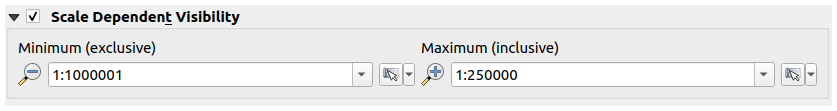
図 8.22 表示縮尺セレクタウィジェット
8.8.5. 空間範囲セレクタ
範囲 セレクタウィジェットは、空間的な範囲を選択して、レイヤに割り当てたり実行するアクションの範囲を制限したい場合に便利なショートカットです。使用される状況にもよりますが、以下の中から範囲を選択できます:
現在のレイヤの領域: 例 レイヤをエクスポートする場合
: 現在のプロジェクトに読み込まれたレイヤの範囲を使います
現在の キャンバスの領域 を使います
キャンバスに描画: 矩形を描画してその座標を使います
ブックマークから計算: 保存されている ブックマーク の範囲を使います
レイアウトマップから計算: レイアウトマップ の範囲を使います
xmin, xmax, ymin, ymaxの形式で座標を入力または編集する
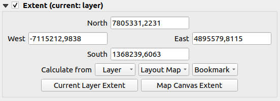
図 8.23 範囲セレクタウィジェット
8.8.6. フォントセレクタ
フォント セレクタウィジェットは、テキスト情報（地物のラベル、地図整飾のタイトルラベル、地図の凡例テキスト等...）に対してフォントプロパティを設定したい場合に便利なショートカットです。ドロップダウン矢印をクリックすると、以下のオプションの一部または全てが表示されます。
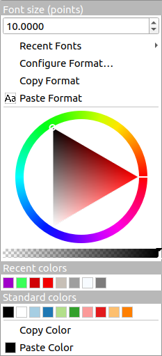
図 8.24 フォントセレクタのドロップダウンメニュー
現在のテキストフォーマットをクリア ウィジェットに割り当てられているテキストフォーマットを解除します（特定の箇所で利用可能）
フォントサイズ を関連づけられた単位で設定します
メニューは、最近使ったフォントと共に、アクティブなフォントが（最上部に）チェックされた状態で表示されます
フォーマットを設定... を選択すると、フォントセレクタウィジェットを押した場合と同じ動作になります。これは テキストフォーマット ダイアログを開き、色、不透明度、向き、HTML表記、バッファ、背景、影など、高度な書式設定オプションを提供します。
フォーマットをコピ ：テキストのフォーマットをコピーします
フォーマットを貼り付け ：コピーしたフォーマットをテキストに貼りつけ、フォーマットを素早く設定できます
色ウィジェット ：簡単に色設定ができます
Tip
フォント選択ウィジェット上でマウスホイールをスクロールすると、関連するテキストのフォントサイズをすばやく変更できます。
8.8.7. 単位セレクタ
QGIS のアイテム（ラベル、シンボル、レイアウト要素 ...）のサイズプロパティは、必ずしもプロジェクト単位または特定のレイヤの単位に拘束されるわけではありません。多くのプロパティでは、 単位 セレクタのドロップダウンメニューを使用して、必要なレンダリングに応じて（画面解像度、用紙サイズ、または地形を基準として）プロパティの値を調整することができます。利用可能な単位は以下のとおりです：
ミリメートル（Millimeters）
ポイント（Points）
ピクセル（Pixels）
インチ（Inches）
パーセント: あるプロパティを別のプロパティのパーセントとして設定することができます。例えば、バッファ／影の大きさを一定にする代わりに、テキストの大きさの変更に応じて構成要素（バッファの大きさ、影の半径...）をうまく拡大縮小するテキストフォーマットを作成するのに便利です。そのため、テキストの大きさが変わっても、それらの大きさを調節する必要がありません。
縮尺済みメートル（Meters at Scale） ：これにより、基礎となる地図単位（例：インチ、フィート、度 ...）に関係なく、常にサイズをメートル単位で設定できます。メートル単位のサイズは、現在のプロジェクト楕円体の設定と、現在のマップ範囲の中心位置でのメートル単位の距離の投影に基づいて計算されます。投影座標系のマップの場合、この設定は投影された単位長さを使用して計算されます。地理的座標系（緯度/経度）に基づくマップの場合には、サイズはマップの縦方向スケールの楕円体計算を使用して計算されたメートル単位で近似されます。
地図単位 ： サイズはマップビューのスケールに応じて拡大縮小されます。これは大きすぎる、あるいは小さすぎる値となることがあるため、エントリの隣にある
ボタンを使用して、サイズを以下に基づいた値の範囲に制限します：最小縮尺 と 最大縮尺 ：これらの縮尺限界値に到達するまでは、値はマップビューの縮尺に基づいてスケーリングされます。縮尺の範囲外の場合は、値は最も近い縮尺限界値に基づく値のままです。
かつ/または 最小サイズ と 最大サイズ を
mm単位で指定したもの ：値はこれらのサイズ限界値に到達するまで、マップビューの縮尺に基づいてスケーリングされます。限界値に到達した場合は、このサイズ限界値で一定となります。
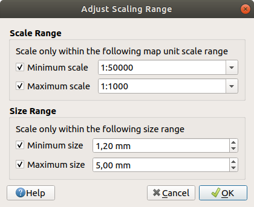
図 8.25 縮尺範囲の調整ダイアログ
8.8.8. 数値フォーマット
数値フォーマッターは、さまざまな書式設定方法（例: 科学表記、通貨値、パーセンテージ値、カスタム書式設定など）を使用して、表示する数値の書式を設定できます。これは、レイアウトのスケールバーやテーブル、カラーランプの凡例、標高プロットなどにテキストを設定する際に使用されます。
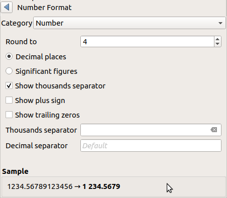
図 8.26 数値フォーマット
様々なカテゴリのフォーマットをサポートしています。多くの場合、下記の数値オプションの一部もしくはすべてを設定できます：
- 数字の３桁区切り記号を表示
- 正の符号を表示
- ゼロ埋め表示
ただし、カスタム設定もあります。提供されているカテゴリは以下のとおりです。
一般情報 、デフォルトのカテゴリ：設定がなく、親ウィジェットの設定もしくはグローバル設定と同様に値を表示します。
カスタム式 を使用すると、カスタムの QGIS式 を作成して数値を書式設定できます。この式では、
@value変数を使用してフォーマットを取得し、標準のQGIS式関数を使って目的の形式に設定できます。数値
値はユーザーが定義した 小数点以下桁数 もしくは 有効数字`で :guilabel:`数値を丸める ことができます
数字の３桁区切り記号 や 小数点記号 をカスタマイズできます
方向/方位のテキスト表現を設定する 方位 には、以下の設定があります。
形式 ：利用可能な値の範囲は
0 から 180°, （E/W付き）、-180 から +180°、0 から 360°です小数点以下桁数 の数字
通貨 は、通貨の値のテキスト表現のための設定です。
接頭辞
単位文字
小数点以下桁数 の数字
分数 は、小数値の分数表現のための設定です（例： 0.5 の代わりに 1/2 ）
表示に
Unicode分数表現を使用 する。 例えば、1/2 の代わりに 1/2 を使用します- 専用Unicode文字を使用
数字の3桁区切り記号 をカスタマイズする
パーセント - 値に
%を付け足します。以下の設定があります小数点以下桁数 の数字
縮尺 ：実際の値がすでにパーセント表現となっている（そのままの値）か、小数値（パーセントに変換する）かを指示します
指数表記 は、
2.56e+03の形式での表記です。 小数点以下桁数 の数字を指定できます。
サンプル セクションの下には、設定のライブプレビューが表示されます。
8.8.9. 混合モード
QGISは混合モードツールを通じて、これまでは画像編集プログラムでしか知られていないような、特別なレンダリング効果のためのさまざまなオプションを提供しています。混合モードは、レイヤや地物に適用したり、印刷レイアウトアイテムにも適用することができます：
通常（Normal）：これは標準の混合モードで、上にあるピクセルのアルファチャンネルを使用して、その下のピクセルと混合します。色は混合されません。
比較・明（Lighten）：これは、前景と背景のピクセルから各成分の最大値を選択します。結果はギザギザで粗くなる傾向があることに注意してください。
網掛け処理（Screen）：アイテムの明るいピクセルは下のレイヤ上に塗られますが、暗いピクセルは塗られません。このモードは、あるアイテムのテクスチャを別のアイテムに混ぜるのに便利です（例えば、陰影図を使って他のレイヤのテクスチャを作成するなど）。
覆い焼き（Dodge）：上にあるピクセルの明るさに基づき下のピクセルを明るくし、彩度を上げます。上にあるピクセルが明るいほど、下のピクセルの彩度と明るさが上がります。これは、上にあるピクセルが明るすぎない場合に最適です。そうでない場合は効果が極端になります。
覆い焼き・加算（Addition）：あるアイテムのピクセル値を他方のピクセル値に加えます。値が上限値よりも大きくなる場合、（RGBモードの場合は）白色で表示されます。このモードは地物をハイライトするのに適しています。
比較・暗（Darken）：上と下のピクセルの各成分で最小値を保持します。「比較・明」と同様に、結果はギザギザで粗くなる傾向があります。
乗算（Multiply）：上のアイテムのピクセル値を下のアイテムのピクセル値と掛け合わせます。結果は暗くなります。
焼きこみ（Burn）：上にあるアイテムの色が濃いと、下にあるアイテムの色が濃くなります。「焼きこみ」は下にあるレイヤの色を調整したり、色付けしたりするのに使えます。
オーバーレイ合成（Overlay）：「乗算」と「網掛け処理」混合モードの組み合わせです。明るい部分はより明るく、暗い部分はより暗くなります。
ソフトライト（Soft light）：「オーバーレイ合成」とよく似ていますが、「乗算」/「網掛け処理」の代わりに「焼き込み」/「覆い焼き」を使います。これは、画像に柔らかい光が当たっているのを模擬したものです。
ハードライト（Hard light）：「ハードライト」も「オーバーレイ合成」モードと非常によく似ています。画像に非常に強い光が当たっているのを模擬したものです。
差の絶対値（Difference）： 結果が常に正の値となるように、下のピクセル値から上のピクセル値を引く、もしくはその逆を行います。黒色との混合は、全ての色に対する違いがゼロのため、何の変化もありません。
減算（Subtract）：あるアイテムのピクセル値から他のアイテムのピクセル値を引きます。負の値となる場合には、黒く表示されます。
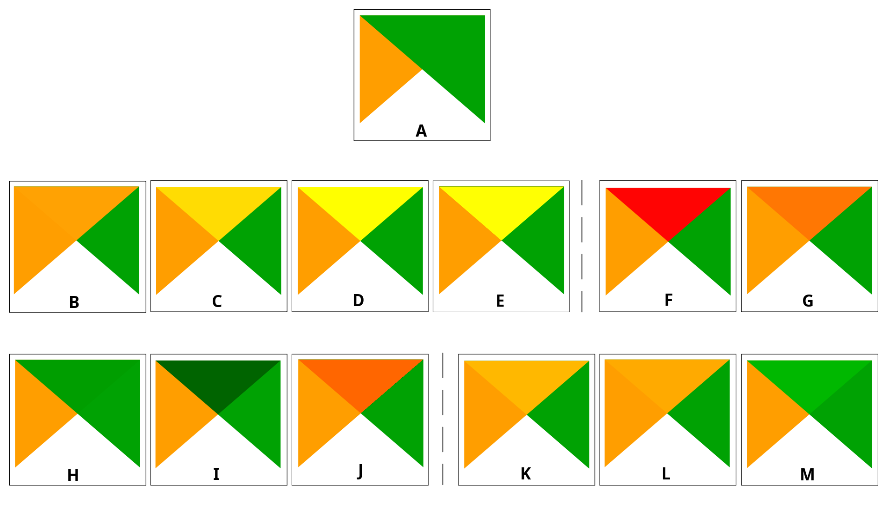
図 8.27 オレンジの地物の上に緑の地物があるときに適用した混合モードの例
A ：通常（Normal）、 B ：明るく（Lighten）、 C ：スクリーン（Screen）、 D ：覆い焼き（Dodge）、 E ：加算（Addition）、 F ：差分（Difference）、 G ：減算（Subtract）、 H ：暗く（Darken）、 I ：乗算（Multiply）、 J ：焼き込み（Burn）、 K ：オーバーレイ（Overlay）、 L ：ソフトライト（Soft light）、 M ：ハードライト（Hard light）
レイヤが グループとしてレイヤを描画 グループの一部である場合、レンダリングに追加の混合モードが利用できます。これらは、あるレイヤの内容のレンダリングを、2つ目の「マスク」レイヤの内容でクリップする方法を提供します。
以下でマスク： 上のピクセルが出力され、その不透明度は下のピクセルにより減じられます。
以下をマスク： 下のピクセルが出力され、その不透明度は上のピクセルにより減じられます。
以下で反転マスク: 上のピクセルが出力され、不透明度は下のピクセルの反転によって減じられます。
以下を反転マスク: 下のピクセルが出力され、その不透明度は上のピクセルの反転によって減じられます。
以下の内部部分を描画: 上のピクセルは下のピクセルの上に混合され、上のピクセルの不透明度は下のピクセルの不透明度によって減じられます。
以下の内側を描画: 下のピクセルは上のピクセルの上に混合され、下のピクセルの不透明度は上のピクセルの不透明度によって減じられます。
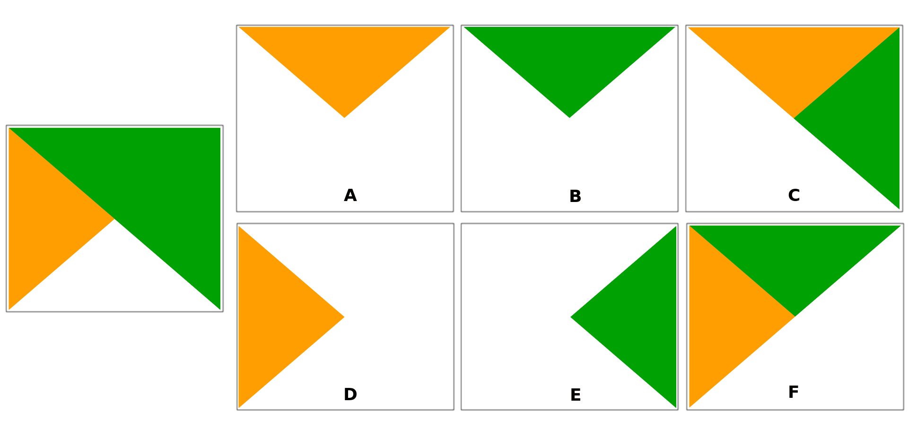
図 8.28 グループ内の上の緑のレイヤに適用された混合切り抜きモードの例
A: 以下をマスク B: 以下でマスク C: 以下の内側を描画 D: 以下を反転マスク E: 以下で反転マスク F: 以下の内部部分を描画
8.8.10. データによって定義された上書きの設定
ベクタレイヤのプロパティダイアログの多くのオプションや印刷レイアウトの設定の横には、  データによって定義された上書き アイコンがあります。このツールでは、レイヤ属性やアイテム設定に基づいた 式 、予め用意された関数やカスタム関数、 変数 を使用して、パラメータに動的な値を設定することができます。これを有効にすると、通常の値（チェックボックス、テキストボックス、スライダー...）に関係なく、このウィジェットによって返される値がパラメータに適用されます。
データによって定義された上書き アイコンがあります。このツールでは、レイヤ属性やアイテム設定に基づいた 式 、予め用意された関数やカスタム関数、 変数 を使用して、パラメータに動的な値を設定することができます。これを有効にすると、通常の値（チェックボックス、テキストボックス、スライダー...）に関係なく、このウィジェットによって返される値がパラメータに適用されます。
8.8.10.1. データによって定義された上書きウィジェット
データによって定義された上書き アイコンをクリックすると、以下のエントリが表示されます：
説明... は、オプションが有効化されているか、予想される入力値、有効な入力型、そして現在の定義を表示します。ウィジェットの上にマウスカーソルを乗せることでも、この情報を表示します。
データをプロジェクトに格納する は、 補助テーブルプロパティ のメカニズムを使ってプロパティを保存できるボタンです。
フィールドの型: レイヤのフィールドのうち、有効な入力型に一致するフィールドから選択するためのエントリです。
色: ウィジェットが色プロパティと関連しているときには、このメニューから現在の プロジェクトの色 スキームとして定義されている色にアクセスできます。
変数 ：利用可能なユーザー定義の 変数 へアクセスするためのメニューです。
編集... ボタンは、 式文字列ビルダ ダイアログを使用して、適用する式を作成もしくは編集するためのボタンです。正しく式を入力するのを助けるために、期待される出力フォーマットのヒントがダイアログ内に表示されています。
貼り付け と コピー ボタン
クリア ボタンで設定を削除します。
数値と色のプロパティには、地物データがプロパティにどのように適用されるのかを再スケーリングするための アシスタント... があります（詳細については 下記 を参照ください）。
Tip
データによる上書きを右クリックで有効化（無効化）
データによって定義された上書きのオプションが正しく設定されている場合には、アイコンは黄色で や になります。もし上書きオプションが壊れている場合には、アイコンは赤色で や になります。
{kind=link}
{kind=link}
{kind=link}
{kind=link}
ウィジェットをマウスの右ボタンでクリックすることで、設定された データによって定義された上書き ボタンを簡単に有効化・無効化できます。
Tip
ミドルクリックで、適用する式を作成または編集します
データによって定義された上書き ウィジェットをマウスの中央ボタンでクリックするだけで、 式文字列ビルダー ダイアログを直接開いて、適用する式を作成または編集できます。
8.8.10.2. データによる定義のアシスタントインターフェースを使用する
データによって定義された上書き ボタンがサイズ、幅、回転、不透明度、または色のプロパティに関連付けられている場合、各地物のパラメータへのデータの適用方法を変更するのに役立つ アシスタント... オプションが利用できます。基本的には、QGISが入力値の範囲を出力値の範囲にスケーリングし、それぞれの地物に対応する出力値で描画します。
アシスタントを利用すると、以下の操作が行えます：
入力 データの定義。すなわち：
ソース ：フィールドまたは
式 を使用して表現する属性値表現する値の範囲：値を手動で入力するか、
レイヤから値の範囲を取得する ボタンを使用して、データに適用された ソース 式から返される最小値と最大値をこれらのフィールドに自動入力できます。指定された範囲外の値を持つフィーチャは、出力範囲の最も近い境界（上限または下限）のプロパティで表現されます。
- 変換曲線を適用する ： デフォルトでは、出力値は特定のスケール手法（設定は下記を参照）に従って入力地物に適用されます。このロジックは上書きすることができます。変換オプションを有効にして、グラフ上をクリックしてブレークポイント（複数可）を追加し、ポイントをドラッグしてカスタム分布を適用します。
出力 値の定義：このオプションは定義するパラメータによって異なります。共通して設定できるのは以下の項目です：
色の場合：各シンボルに正しい色を割り当てるために、指定された color ramp に基づいてソース値の線形補間が行われます。また、NULL値を持つシンボルに使用する色を指定することもできます。
回転の場合：各シンボルに正しい回転を割り当てるために、最小角度と最大角度の範囲で線形補間が行われます。また、NULL値を持つシンボルに使用する角度を指定することもできます。
不透明度の場合：最小不透明度と最大不透明度の範囲で多項式補間が行われます。 指数 フィールドは、ソース値が出力範囲にマッピングされる方法を決定します。
1より大きい累乗値は、ソース値が最大値に近づくにつれて加速する前に、出力値の分布を緩やかに開始させます。小さい指数（1未満）はその逆になります。また、NULL値を持つシンボルに使用する不透明度を指定することもできます。幅（ラインシンボル）の場合：各シンボルに正しい幅を割り当てるために、最小値と最大値の範囲で補間が行われます。 スケール方法 フィールドは、補間がどのように行われ、出力値が何を表すかを制御します。
線形 ： ソース 式の値が 開始値 から 終了値 まで変化するとき、シンボルの幅を 開始幅 と 終了幅 の間で線形補間します。シンボルの幅は比例します。
指数 ：同じく幅を補間しますが、指数 フィールドによってスケーリングに使用される正確な累乗値を制御できます。
1より大きい累乗値は、ソース値が最大値に近づくにつれて加速する前に、出力値の分布を緩やかに開始させます。小さい指数 （1未満）はその逆になります。
また、NULL値を持つシンボルに使用する幅を指定することもできます。
サイズ（ポイントシンボル）の場合：各シンボルに正しいサイズ（直径）を割り当てるために、最小値と最大値の範囲で補間が行われます。縮尺 The スケール方法 フィールドは、補間がどのように行われ、出力値が何を表すかを制御します。
半径 ： ソース 式の値が 開始値 から 終了値 まで変化するとき、シンボルの直径を 開始幅 と 終了幅 の間で線形補間します。シンボルの直径は比例します。
面積 ： ソース 式の値の平方根（
0.5乗）に応じてシンボルの直径をスケーリングし、 ソース 式の値が 開始値 から 終了値 まで変化するときに、シンボルの面積を 開始幅 と 終了幅 の間で線形補間します。シンボルの面積は比例します。この手法は、 半径 の手法よりもサイズの変化に対する人間の知覚をより正確に反映します。フラナリー ：比率シンボルの面積に対して人間の目が実際よりも小さく見積もってしまう知覚的な過小評価を軽減するために、面積補間に補正係数 （
0.57乗）を適用します。おそらく円形シンボルにのみ関連します。指数 ：同じく面積を補間しますが、指数 フィールドによってスケーリングに使用される正確な累乗値を制御できます。
1より大きい累乗値は、ソース値が最大値に近づくにつれて加速する前に、出力値の分布を緩やかに開始させます。小さい指数 （1未満）はその逆になります。
また、NULL値を持つシンボルに使用するサイズを指定することもできます。
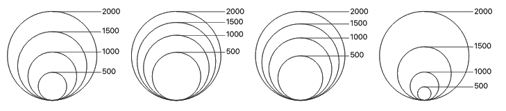
図 8.29 さまざまな手法による値のスケーリング（左から右へ）： 半径ー面積ーフラナリーー2の指数
対応しているプロパティの場合には、ダイアログの右側にライブ更新プレビューが表示され、値のスケーリングを制御するのに役立ちます。
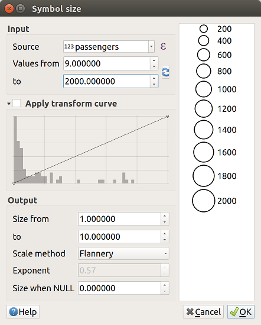
図 8.30 passengersレイヤのフィールド値に基づいた地物サイズのスケーリング
上記のサイズ可変アシスタントに表示される値は、以下の編集可能な式を使用して、サイズの「データによって定義された上書き」を設定します。
coalesce(scale_polynomial("passengers", 9, 2000, 1, 10, 0.57), 0)
8.8.11. 認証
QGISの多くのデータプロバイダ（データベース、Webサービス、またはファイルベースのサービスなど）は、接続するために認証情報を必要とします。QGISの認証ウィジェットを使用すると、ユーザーはこれらの認証情報を安全に指定でき、そのための方法として以下の2つが用意されています。
基本的な認証情報を直接入力する
または、暗号化された認証データベースに保存されている既存の認証設定を選択する。
{kind=link}
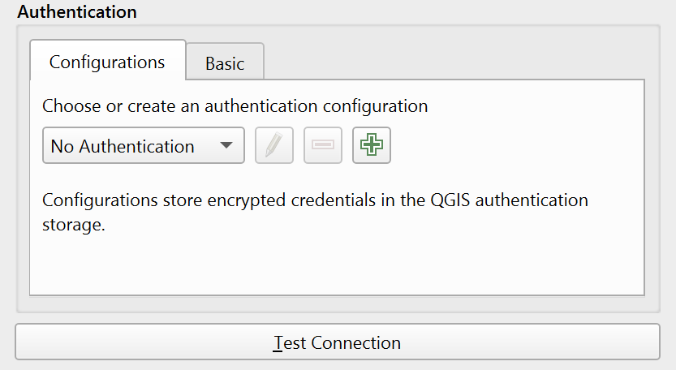
図 8.31 認証システム
8.8.11.1. 基本
認証情報を設定するとき、 基本 タブでは以下の項目を設定できます：
ユーザー名 ：データソースへの接続に使用されるユーザー名。
パスワード ：データソースへの接続に使用されるパスワード
Convert to configuration will save the user name and password in a new authentication configuration.
ユーザー名 と パスワード パラメータのいずれか、または両方を保存できます。保存した場合、このデータベースやサービスに接続する必要があるたびに、それらがデフォルトで使用されます。保存しない場合、次回のQGISセッションでデータベースやサービスに接続する際に、認証情報の入力を求められます。このプロンプトはキャンセルできますが、その場合は接続に失敗します。現在のQGISセッション中に再度入力を求められないようにするには、 Ignore for session ボタンをクリックします。また、 Ignore for 10 seconds を選択することも可能です。これによりプロンプトはキャンセルされますが、再度接続を試みるまでに10秒間待つ必要があります。入力した接続パラメータは一時的な内部キャッシュに保存され、現在のQGISセッションが終了するまで、同じデータベースやサービスのユーザー名/パスワードが要求されるたびに返されます。
警告
QGISユーザー設定とセキュリティ
認証 タブで ユーザー名 と パスワード を保存すると、保護されていない認証情報が接続設定に保持されます。 例えば、プロジェクトファイルを他者と共有した場合には、これらの 認証情報が見えてしまいます 。従って、代わりに 認証設定 の中に資格情報を保存する（ 設定 タブを使用します。詳細は 認証システム を参照）か、サービス接続ファイル（例は PostgreSQL Service connection file を参照）内に資格情報を保存することをお勧めします。
8.8.11.2. 設定
QGISは認証情報を 認証設定 内に保存できます。各設定はログイン詳細情報をポータブルな暗号化データベースに安全に保存するため、毎回入力することなく再利用できます。これらの設定は、プロジェクトや設定内でIDトークンによって安全に参照できます。
認証設定セレクタを使用すると、ユーザーは既存の認証設定から選択するか、新しい認証設定を作成できます。この機能では以下の操作が行えます：
ドロップダウンリストから、既存の認証設定を選択します。
- 認証構成を作成
- 選択した認証構成を削除
 選択した認証構成を編集
選択した認証構成を編集
認証システムについての詳細は、 認証システム を参照してください。